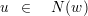
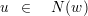
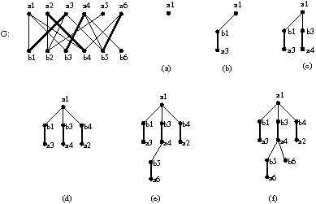
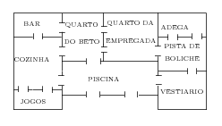

. Cada elemento de V é chamado de vértice do
grafo e cada elemento de E é chamado de aresta do grafo, dessa forma cada aresta e ∈ E é um subconjunto de V
formado por exatamente dois vértices, ou seja, e ⊆ V e |e| = 2.
. Cada elemento de V é chamado de vértice do
grafo e cada elemento de E é chamado de aresta do grafo, dessa forma cada aresta e ∈ E é um subconjunto de V
formado por exatamente dois vértices, ou seja, e ⊆ V e |e| = 2.
Esse texto contém hyperlinks que ilustram a discussão de alguns tópicos da disciplina. Eu tomei o cuidado de fazer ligações com páginas WEB que tinham, no momento que fiz o acesso, informações corretas, entretanto essas páginas estão fora do meu controle e podem sofrer alterações, portanto leia com cautela.
Um grafo é um par ordenado de conjuntos finitos (V,E) tal que E ⊆. Cada elemento de V é chamado de vértice do
grafo e cada elemento de E é chamado de aresta do grafo, dessa forma cada aresta e ∈ E é um subconjunto de V
formado por exatamente dois vértices, ou seja, e ⊆ V e |e| = 2.
Todo grafo pode ser representado geometricamente por um diagrama. No plano, desenhamos um ponto para cada vértice e um segmento de curva ligando cada par de vértices que determinam uma aresta (figura 1). Claramente, essa representação geométrica de um grafo não é única.
Se G denota o grafo que é definido pelo par (V,E) então escrevemos G = (V,E).
No que segue u e v denotam vértices e e e f denotam arestas de um grafo
Quando nos referimos a um grafo conhecido G sem especificarmos o conjunto dos vértices e o conjunto das arestas que definem G esses passam a ser referidos como V(G) e E(G), respectivamente. Assim, se G = (X,Y ) então V (G) = X e E(G) = Y .
Para um grafo G qualquer, chamamos |V (G)| de ordem de G e chamamos |V (G)| + |E(G)| de tamanho de G.
Um expoente em G, quando G é um grafo, denota a ordem de G, assim quando queremos ressaltar que G é um grafo de ordem n, para algum n ∈ ℕ, escrevemos Gn.
Chamamos G0 = (∅,∅) de grafo vazio e todo grafo de ordem 1 de grafo trivial.
Exercício 1.Um químico deseja embarcar os produtos A,B,C,D,E,F,X usando o menor número de caixas. Alguns produtos não podem ser colocados numa mesma caixa porque reagem. Os produtos A,B,C,X reagem dois-a-dois; A reage com F e com D e vice-versa; E também reage com F e com D e vice-versa. Descreva o grafo que modela essa situação, mostre um diagrama desse grafo e use esse grafo para descobrir o menor número de caixas necessárias para embarcar os produtos com segurança.
Exercício 2.Adaltina esperava 4 amigas Brandelina, Clodina, Dejaina e Edina para um lanche em sua casa. Enquanto esperava preparou as lanches: Bauru, Misto quente, Misto frio e X-salada. Brandelina gosta de Misto frio e de X-salada; Clodina de Bauru e X-salada; Dejaina gosta de Misto quente e Misto frio; Edina gosta de de Bauru e Misto quente. Descreva o grafo que modela essa situação, mostre um diagrama desse grafo e use esse grafo para descobrir se é possível que cada amiga de Adaltina tenha o lanche que gosta.
Exercício 3.Para todo n ∈ ℕ, qual é o número máximo de arestas que pode ter um grafo com n vértices?
☚
Exercício 4.O complemento de um grafo G, denotado por G, é o grafo que tem o mesmo conjunto de vértices de G e dois vértices formam uma aresta em G se e somente se não formam uma aresta de G:
☚
☚
Exercício 6.Um grafo é chamado de completo sobre V se todo par de vértices de V é uma aresta do grafo, ou seja E = . Um grafo completo com n vértices é denotado por Kn. Prove que
Exercício 7.Considere o caso geral do exercício 1: Um químico deseja embarcar os produtos p1,p2,…,pn usando o menor número de caixas. Alguns produtos não podem ser colocados num mesmo caixas porque reagem. Seja G o grafo que modela esse problema, onde vértices são produtos e arestas os pares que reagem, e denote por χ(G) o número de mínimo de caixas de modo que seja possível encaixotar os produtos com segurança. Prove que
Para um vértice v qualquer num grafo G, definimos os conjuntos
|
| (1) |
|
| (2) |
esse último chamado de vizinhança de v. Os elementos de NG(v) são chamados de vizinhos de v.
Para todo v ∈ V (G), o número de vizinhos de v é chamado de grau do vértice v no grafo G. Os graus dos vértices de um grafo é um dos seus parâmetros importantes e por isso recebem uma notação especial. Para um grafo G = (V,E) não-vazio
Observação 1.As vezes suprimimos os índices _G ou os argumentos _(G) para simplificar escrevendo, por exemplo, usamos simplesmente E(v) e N(v), omitindo os índices da notação, ou escrevemos Δ para o grau máximo e d(v) para o grau de v.
Exemplo 2.No exemplo 1 encontramos d(7) = |E(7)| = d(6) = |E(6)| = 1 e d(5) = |E(5)| = 2. Também, o grau máximo é Δ(G) = 2, o grau mínimo é δ(G) = 0 e o grau médio é d(G) = 5∕4.
Demonstração. Seja (V,E) em grafo e defina o conjunto X = {(u,e) ∈ V ×E : u ∈ e} e vamos contar seu número de elementos de duas maneiras distintas.
Primeiro, cada vértice u participa de d(u) elementos de X, portanto
|
| (8) |
Depois, cada aresta e está presente em dois elementos de X, logo
|
| (9) |
Demonstração. Seja G um grafo. Denote por I o subconjunto formado pelos vértices em V (G) de grau ímpar e denote por P o subconjunto dos vértices de grau par. Usando que I ∩ P = ∅, que I ∪ P = V (G) e o Teorema 1, temos
|
| (10) |
portanto devemos ter ∑ u∈Id(u) par, o que semente é possível quando |I|é par. □
Exercício 8.Chico e sua esposa foram a uma festa com três outros casais. No encontro deles houveram vários apertos de mão. Ninguém apertou a própria mão ou a mão da(o) esposa(o), e ninguém apertou a mão da mesma pessoa mais que uma vez.
Após os cumprimentos Chico perguntou para todos, inclusive para a esposa, quantas mãos cada um apertou e recebeu de cada pessoa uma resposta diferente. (i) Quantas mãos Chico apertou? (ii) Quantas mãos a esposa de Chico apertou?
Exercício 10.Decida se pode existir um grafo G com vértices que têm graus 2,3,3,4,4,5. E graus 2,3,4,4,5?
Exercício 11.Seja G um grafo com 14 vértices e 25 arestas. Se todo vértice de G tem grau 3 ou 5, quantos vértices de grau 3 o grafo G possui?
Exercício 12.Prove que em todo grafo de ordem pelo menos 2 existem pelo menos dois vértices com o mesmo grau.
☚
Exercício 13. Para um número natural r, um grafo é r-regular se todos os vértices têm grau r. Para um grafo r-regular com n vértices e m arestas, expresse m em função de n e r.
Exercício 15.Prove que se |V (G)|≥ 3 e δ(G) ≥ então existem vértices u e v em G distintos e tais que N(u) ∩ N(v)≠∅.
Exercício 16. Dado G, o grafo linha de G, denotado por LG, é o grafo cujos vértices são as arestas de G e um par de vértices define uma aresta em LG se, e somente se, esses vértices são arestas adjacentes em G. Dado G determine |V (LG)| e |E(LG)|.
Dizemos que o grafo H é um subgrafo do grafo G se, e somente se, V (H) ⊆ V (G) e E(H) ⊆ E(G) e nesse caso escrevemos H ⊆ G para indicar que H é subgrafo de G.
Exemplo 3.Considerando o grafo G do exemplo 1 temos que
Um subgrafo H ⊆ G onde V (H) = V (G) é chamado de subgrafo gerador.
2.1. Subgrafo induzido por um subconjunto de vértices.
Se U ⊆ V (G) então escrevemos G[U] para o subgrafo induzido por U que é o subgrafo
![( { })
G [U ] = U, {u, v} ∈ E (G): u ∈ U e v ∈ U .](ci06524x.png)
2.2. Subgrafo induzido por um subconjunto de arestas.
Se M = {e1 ,e2,…,em}⊆ E(G), então o subgrafo induzido por M, denotado , tem como conjunto de vértices e1 ∪ e2 ∪ ∪ em e como conjunto de arestas o próprio M
Exemplo 4.Dos grafos G, H e I cujos diagramas são dados na figura 2, podemos dizer que H é um subgrafo induzido de G enquanto que I é um subgrafo mas não é induzido.
Exercício 18. Descubra um subgrafo induzido de
Se o subconjunto U ⊆ V (G) induz um grafo completo em G então chamamos U de clique em G. Mais especificamente, se G[U] é um grafo completo com k vértices então dizemos que U é um k-clique em G.
O caso particular de um 3-clique num grafo G é chamado de triângulo de G.
Por outro lado, todo subconjunto de vértices U ⊆ V (G) tal que G[U] = (U,∅) é chamado de conjunto independente de G, ou k-conjunto-independente no caso |U| = k.
Exemplo 5.O subgrafo G′ do exemplo 3 é um 3-clique e G′′ do exemplo 3 é um 3-conjunto-independente.
No grafo G do exemplo 1 os conjuntos {3,5,6} e {1,4,6,8} são independentes; no caso de {1,4,6,8} temos um conjunto independente de cardinalidade máxima pois não há naquele grafo conjunto independente com 5 ou mais vértices. Nesse mesmo grafo, {8}, {6,7} e {1,2,5} são cliques, o último de cardinalidade máxima.
Observação 2 (leia esse aviso antes). O tamanho do maior clique e o tamanho do maior conjunto independente num grafo G são difíceis de serem calculados computacionalmente. Eles pertencem a classe dos problemas NP-difíceis. Uma conseqüência desse fato é que não é sabido se existem algoritmos cujo tempo de execução no pior caso é um polinômio em |V (G)| + |E(G)| para resolver esse problemas. A descoberta de um algoritmo com tempo de pior caso polinomial no tamanho de G, ou a prova de que ele não existe, é um dos problemas não-resolvidos mais importantes da atualidade, o problema P × NP. Trata-se de um dos 7 problemas do milênio, dos quais restam 6 não resolvidos, cada um com uma recompensa de US$1.000.000,00 para uma solução.
Chamamos um grafo G de grafo bipartido se existem dois conjuntos independentes A e B em G que particionam V (G), isto é, tais que A ∩ B = ∅ e A ∪ B = V (G). Por exemplo, o seguinte grafo é bipartido
Um grafo bipartido G com partes A e B é dito completo se tem |A|⋅|B| arestas, ou seja, E(G) = {{a, b}⊆ V (G): a ∈ A e b ∈ B}. Um grafo bipartido completo com partes de cardinalidade n e m é denotado por Kn,m .
Sejam G um grafo, A e B ⊂ V (G) dois subconjuntos disjuntos em V (G). Definimos o subconjunto de arestas
|
| (11) |
e o subgrafo bipartido induzido por A e B é o grafo bipartido
 |
O conjunto de arestas E(A,A) é chamado de corte definido por A e, (11) por dessa forma podemos escrever
|
| (12) |
Exercício 19. Mostre que em qualquer grafo G com pelo menos 6 vértices ou existe um 3-clique ou existe um 3-conjunto-independente. (Dica: exercício 6 e princípio da casa dos pombos sobre EK6(v).)
☚
Exercício 20.Dado um grafo G, denotamos por α(G) a cardinalidade do maior conjunto independente em G,
☚
Exercício 21.Para todo grafo G, denotamos por ω(G) a cardinalidade do maior clique em G
☚
Exercício 22.Redefina para todo grafo G o parâmetro χ(G) dado no exercício 7 em função dos conjuntos independentes de G. Esse parâmetro de um grafo é conhecido na literatura como número cromático do grafo.
Exercício 23.Prove que as duas desigualdades dadas a seguir valem para todo grafo G com pelo menos um vértice
|
| (13) |
Exercício 24.Prove que E(A,B) = E(B,A), segundo a definição dada em (11).
Exercício 25.Seja G = (A ∪ B,E) um grafo bipartido qualquer e suponha que |A| < |B|. É verdade que α(G) = |B|? Determine ω(G).
Exercício 27.Prove a afirmação da equação (12).
☚
Exercício 28.Dado um grafo G, defina para todo U ⊆ V (G) a vizinhança de U, denotada NG(U), por
|
|
É verdade que |E(U,U)| = |NG(U)|? Justifique.
☚
Exercício 29.Um grafo G é dito k-partido, para k ∈ ℕ, se existem k conjuntos independentes A1, A2, …, Ak
que particionam V (G), ou seja, V (G) = A1 ∪ A2 ∪ ∪ Ak, o conjunto Ai é um conjunto independente em G
para todo i ∈ {1,2,…,k} e Ai ∩ Aj = ∅ para quaisquer i e j distintos. Prove que dentre os grafos k-partidos
(k ≥ 3) completos com n vértices o número máximo de arestas é atingido quando |Ai|−|Aj| ≤ 1 para todos
i, j ∈ {1, 2, … , n} distintos.
∪ Ak, o conjunto Ai é um conjunto independente em G
para todo i ∈ {1,2,…,k} e Ai ∩ Aj = ∅ para quaisquer i e j distintos. Prove que dentre os grafos k-partidos
(k ≥ 3) completos com n vértices o número máximo de arestas é atingido quando |Ai|−|Aj| ≤ 1 para todos
i, j ∈ {1, 2, … , n} distintos.
Exercício 30.Mostre que, se n = kq + r com 0 ≤ r < k, então o número de arestas do grafo do exercício anterior é
|
|
e que esse número é limitado por
|
|
Dizemos que os grafos G e H são isomorfos e, nesse caso escrevemos G ≃ H, se existe uma função bijetora
|
| (14) |
tal que
|
| (15) |
para todos u, v ∈ V (G). Uma função f como acima é chamada de isomorfismo.
Exemplo 6 (Grafo de Petersen). Os grafos representados na figura 3 são isomorfos pelo isomorfismo f(1) = a, f(2) = b, f(3) = c, f(4) = d, f(5) = e, f(6) = f, f(7) = g, f(8) = h, f(9) = i, f(10) = j. Esse grafo é chamado de grafo de Petersen, é um dos grafos mais conhecidos na Teoria dos Grafos (leia mais aqui).
Notamos que quaisquer dois grafos completos G e H de mesma ordem são isomorfos. Mais que isso, qualquer bijeção entre V (G) e V (H) define um isomorfismo entre eles. Nesse caso, dizemos que o grafo é único a menos de isomorfismos e por isso usamos a mesma notação para todos eles, a saber Kn, quando o conjunto dos vértices não é relevante.
Exemplo 7.Há oito grafos distintos com três vértices, eles estão descritos nas representações da figura abaixo.
No entanto, há apenas 4 grafos não-isomorfos com três vértices, representados pelos seguintes diagramas
Não existe uma caracterização simples de grafos isomorfos. Isso significa que não há algoritmo eficiente que recebe dois grafos e decide se eles são isomorfos.
Exemplo 8.Nenhum dos grafos G, H e K representados na figura 6 são isomorfos.
Temos que G não é isomorfo a H porque G não tem um vértice de grau quatro enquanto que o vértice 5 em H tem grau quatro, portanto não há como haver uma bijeção entre os vértices desse grafo que preserve as adjacências. Pelo mesmo motivo H não é isomorfo a K. Agora, G não é isomorfo a K porque caso existisse um isomorfismo f : V (G) → V (K) então a imagem por f do conjunto {2,3,5}⊂ V (G) é, obrigatoriamente, o conjunto {2,3,5}⊂ V (K), mas qualquer bijeção f não preserva adjacência entre esses vértices pois {2,3,5} em G induz um triângulo e em K não (veja mais no exercício 33 abaixo).
Nesse exemplo foram dados argumentos diferentes para concluir o mesmo fato, o não-isomorfismo entre pares de grafos. Ainda, existem exemplos de grafos não isomorfos para os quais esses argumentos não funcionam (da mesma forma que a existência de um vértice de grau quatro funciona para mostrar que G não é isomorfo a H mas não serve para mostrar que G não é isomorfo a K pois 1,2,2,3,3,3 são os graus dos vértices de ambos os grafos). Isso se deve ao fato de ser difícil caracterizar de modo eficiente o não-isomorfismo entre grafos:
Observação 4 (leia esse aviso antes). Não se conhece algoritmo de tempo polinomial no tamanho dos grafos para decidir se dois grafos não são isomorfos. Mais do que isso, não se conhece um algoritmo de tempo polinomial que receba como entrada uma terna (G,H,P) onde P é uma prova de que G e H não são isomorfos e que devolva sim se G1 não é isomorfo a G2 e devolva não caso contrário. Em linguagem técnica dissemos que não se sabe se o problema do não-isomorfismo de grafos está na classe NP de complexidade computacional.
Por outro lado, podemos considerar o problema do isomorfismo de grafos:
Observação 5 (leia esse aviso antes). Atualmente não se conhece algoritmo polinomial no tamanho do grafo que resolva o problema. Entretanto, não é difícil projetar um algoritmo de tempo polinomial que recebe a terna (G, H, f) onde f : V (G) → V (H) e devolve sim caso G e H são isomorfos e f é o isomorfismo, caso contrário devolve não. Em linguagem técnica dizemos que o problema do isomorfismo de grafos está na classe NP de complexidade de problemas computacionais. Entretanto, não é sabido se esse problema é NP-completo
Exercício 31.Determine quais pares dentre os grafos abaixo são isomorfos.
Exercício 33. Sejam G e H grafos isomorfos e f : V (G) → V (H) um isomorfismo. É verdade que G[U] é isomorfo a H[f(U)] para todo U ⊆ V (G)? Justifique.
☚
Exercício 34.Um automorfismo de um grafo é um isomorfismo do grafo sobre ele mesmo. Quantos automorfismos tem um grafo completo?
Exercício 35.Mostre que o conjunto de automorfismos de um grafo com a operação de composição de funções definem um grupo.
Exercício 36.Um grafo G = (V,E) é vértice-transitivo se para quaisquer u,v ∈ V existe um automorfismo f de G com f(v) = u. Analogamente, G é aresta-transitivo se para quaisquer arestas {x,y},{z,w}∈ E existe um automorfismo f de G tal que {f(x),f(y)} = {z,w}.
Dê um exemplo de grafo vértice-transitivo. Dê um exemplo de grafo aresta-transitivo. Dê um exemplo de grafo aresta-transitivo mas não vértice-transitivo.
Em algumas situações podemos ter um modelo para um problema a ser resolvido e esse modelo seria um grafo se desconsiderassemos algumas peculiaridades da situação. Por exemplo, um mapa rodoviário pode ser modelado definindo-se um vértice para cada cidade e duas cidades formam uma aresta no grafo (modelo) se existe rodovia ligando essas cidades correspondentes aos vértices. Normalmente, distância é um parâmetro importante nesses mapas e assim as arestas devem ter um comprimento associado a elas. Entretanto, “comprimento de aresta” não faz parte da definição de um grafo. Num outro exemplo, se estamos interessados em rotas de tráfego dentro de uma cidade podemos definir um vértice por esquina e duas esquinas consecutivas numa mesma rua formam uma aresta. Nesse caso, as ruas têm sentido (mão e contra-mão) e as arestas também deveriam ter mas, novamente, essa característica não faz parte da definição de grafos.
Esses problemas e muitos outros podem ser modelados com “outros tipos” de grafos. Alguns desses outros tipos são
Grafo com pesos nas arestas é um tripla (V,E,ρ) de modo que (V,E) é um grafo e ρ: E → R é uma função que assume valores em R ⊆ ℝ. O conjunto R em geral depende do problema sendo considerado. Por exemplo, se os pesos representam distância então tomamos R = ℝ+ (reais não-negativos). O grafo (V,E) é chamado grafo subjacente do grafo com pesos nas arestas.
Grafo orientado é aquele onde as arestas têm uma orientação (são pares ordenados) de modo que se u e v são vértices, então (u,v)≠(v,u) e além disso se (u,v) é uma aresta então (v,u) não é aresta. Removendo o sentido das arestas temos o grafo subjacente ao grafo orientado.
Grafos dirigido ou digrafo é dado (V,E) onde E ⊆ V × V \{(v,v): v ∈ V }.
Multigrafo é dado por um conjuntode vértices e podemos ter mais de uma aresta incidente ao mesmo par de vértices. Removendo as arestas repetidas de um multigrafo temos o grafo subjacente ao multigrafo.
Exercício 39.Formule uma versão do teorema 1 para grafos orientados.
O primeiro passo para representar computacionalmente um grafo é mapear (construir um isomorfismo) o conjunto de vértices do grafo G no subconjunto dos número naturais {1,2,…,|V (G)|} para facilitar o acesso as informações usando estruturas indexadas. Isso pode ser feito usando as técnicas de busca conhecidas para recuperar os inteiros associados aos vértices como, por exemplo, tabela de espalhamento (hashing) ou árvore binária de busca. Feito isso, qualquer problema computacional sobre um grafo G é tratado computacionalmente sobre um grafo isomorfo G′ com vértices V (G′) = {1, 2, …,|V (G)|} e a estrutura de busca escolhida no passo anterior é usada para representar o isomorfismo.
No que segue, sempre que tratamos problemas computacionais sobre grafos estamos assumindo os grafos são definidos sobre o conjunto de vértices {1,2,…,n}, para algum n ∈ ℕ. Veremos duas das estruturas de dados mais importantes para a representação de grafos.
6.1. Matriz de adjacências de G.
É a matriz |V |×|V | denotada por A(G), ou A simplesmente, definida por
6.2. Lista de adjacências de G.
É um vetor N[] de listas ligadas. A lista N[i] contém os vizinhos do vértice i e cada nó dessa lista é composto por uma variável que armazena um vértice e um ponteiro que aponta para o próximo nó da lista.
Observação 6.A representação de uma grafo por lista de adjacências não é única, pois qualquer permutação dos nós em N[i] define uma lista válida.
6.3. Complexidade de algoritmos em grafos.
Neste texto entendemos por complexidade do algoritmo a
complexidade de tempo no pior caso.
Exemplo 11.Sejam A e B dois algoritmos distintos que executam a mesma tarefa sobre um grafo G = (V,E). O algoritmo A gasta, no pior caso, |V |2 passos para executar a tarefa e o algoritmo B gasta (|V | + |E|)log |E| passos no pior caso. Para grafos com |V |2∕4 arestas o primeiro algoritmo é sempre melhor enquanto que para grafos com 1.000|V | arestas o segundo algoritmo é assintoticamente melhor (melhor para |V |≥ 16.645, enquanto que o primeiro é melhor para |V |≤ 16.644). Para entradas pequenas (até 25 mil vértices) a ordem das funções são comparadas nos gráficos da figura 9.
Usualmente, a expressão que estabelece a complexidade de um algoritmo é escrita em função do tamanho da representação usada e em notação assintótica: sejam f,g duas funções definidas nos naturais, então
Vejamos a complexidade de alguns algoritmos que executam tarefas simples comparando cada uma das representações dadas acima para um grafo fixo G = (V,E)
| Tarefa | Matriz de adjacências | Lista de adjacências |
| ij ∈ E? | O(1) | O(|V |) |
| Determine d(i) | O(|V |) | O(|V |) |
| Devolva E | O(|V |2) | O(|E|) |
Note que o número de arestas satisfaz a desigualdade
|
|
portanto, para “Devolva E” é mais eficiente usar listas quando temos poucas arestas. As vezes a comparação entre o desempenho pode ser mais complicada.
Observação 7. Um algoritmo em grafo é de complexidade polinomial se a complexidade de tempo no pior caso é expressa por uma função polinomial no tamanho da representação. Complexidade polinomial é independente da representação do grafo por matriz ou lista de adjacências, ou seja, essas representações são polinomialmente relacionadas.
Exercício 41.É verdade que para todo G vale que |E(G)| = O(|V (G)|) para |V (G)| suficientemente grande?
Exercício 42.É verdade que para todo G vale que log |E(G)| = O(log |V (G)|) para |V (G)| suficientemente grande?
Exercício 43.Prove o afirmação feita na observação 7.
Exercício 44.Sejam G um grafo, A a sua matriz de adjacências e b(i,j) as entradas da matriz A2. Que parâmetro de G está associado ao número b(i,i), para cada i ∈{1,2,…,|V (G)|}? Qual a relação entre b(i,j) e, NG(i) e NG(j) quando i≠ j?
Exercício 45. Para um grafo dirigido dizemos que a aresta (u,v) ∈ E sai de u e chega em v. Os vetores de incidências de um grafo dirigido D = (V,E) são os vetores S e C indexados por E tais que para e = (u,v) ∈ E temos S[e] = u e C[e] = v, e nesse caso dizemos que e sai de u e chega em v. Determine o tempo para:
(i) dados e ∈ E e v ∈ V , determinar se e incide em v;
(ii) dado e ∈ E, determinar suas extremidades;
(iii) dado v ∈ V , determinar as arestas que saem de v e determinar as arestas que chegam em v.
Uma matriz de incidências de um grafo dirigido D = (V,E) é uma matriz B de dimensão |V |×|E| (as linhas são indexadas por V e as colunas por E) tal que
(a) Determine o tempo para:
(i) dados e ∈ E e v ∈ V , determinar se e incide em v;
(ii) dado e ∈ E, determinar suas extremidades;
(iii) dado v ∈ V determinar as arestas que saem de v e determinar as arestas que chegam em v.
(b) Determine o que as entradas da matriz |V |×|V | dada por B ⋅ BT representam, onde BT é a matriz transposta de B.
Exercício 46.Seja G um grafo qualquer e A sua matriz de adjacências. Como é possível determinar o número de triângulos de um grafo G qualquer a partir de A3?
Exercício 47.Em 1990, Coppersmith e Winograd mostraram um algoritmo que determina o produto de matrizes duas n × n usando O(n2,376) operações aritméticas. Como esse pode ser usado para determinar se um grafo tem triângulo?
Exercício 48.Sejam G um grafo e A sua matriz de adjacências. Prove que se os autovalores de A são distintos então o grupo dos automorfismos é abeliano.
Exercício 49.O traço de uma matriz A, denotado por tr(A), é a soma dos elementos na diagonal da matriz. Quanto vale o traço de uma matriz de adjacências? Quanto vale tr(A2) em função de E(G)?
Exercício 50.Por A ser uma matriz simétrica, sabemos da Álgebra Linear que todos os seus autovalores são números reais. Determine os autovalores da matriz de adjacências do grafo completo Kn. Mostre que se G é r-regular então r é uma autovalor de A.
Exercício 51.Dada uma representação por listas de adjacências de um grafo dirigido D descreva um algoritmo com tempo de execução O(|V (D)| + |E(D)|) para computar a representação por listas de adjacências do grafo subjacente.
Exercício 52.Quando uma representação por uma matriz de adjacências é utilizada, muitos algoritmos sobre grafos gastam tempo Θ(|V |2), mas existem algumas exceções. Mostre que determinar se um grafo orientado contém um sorvedouro — isto é, um vértice com grau de entrada |V |− 1 e grau de saída 0 — pode ser determinado em tempo O(|V |) quando uma representação por matriz é utilizada.
Nessa seção veremos algoritmos que formam a base para muitos algoritmos em grafos (para todos os que serão vistos nesse curso). O objetivo de um percurso num grafo é o seguinte: dado a representação de um grafo G = (V,E), sistematicamente visitar todos os vértices e todas as arestas desse grafo.
Dado um vértice w em V , dizemos que o vértice u do grafo é alcançável por w em G se existe uma seqüência de vértices v1 , v2 , …,vm de G tal que
Definimos que w é alcançável por w em G, para todo w ∈ V .
Uma seqüência de vértices como acima é chamada de passeio em G.
O percurso num grafo G começa com as seguintes considerações: cada vértice está em um de dois estados possíveis em qualquer instante da execução: não-visitado ou visitado; cada aresta em E(u) está em um de dois estados: não-visitada a partir de u ou visitada a partir de u, para todo u ∈ V (G). De início todos os vértices de G estão não-visitado e todas as arestas não-visitada a partir de ambos os extremos.
O seguinte algoritmo, que chamaremos de Visite, recebe um grafo G e um vértice qualquer v ∈ V (G) e visita todos os vértices alcançáveis a partir de v uma vez e visita todas as arestas induzidas por esses vértices a partir de cada extremo, portanto, visita cada aresta duas vezes. Para gerenciar essa visita o algoritmo Visite usa uma lista L na qual a busca, inserção e remoção de elementos é feita de maneira arbitrária e com custo constante.
 em
em  e marque
e marque 
 ;
;


 em há aresta não-visitada a partir de
em há aresta não-visitada a partir de 

 ;
;
 a partir de
a partir de  ;
;

 é não-visitado
é não-visitado 
 em
em  e marque
e marque 
 ;
;
 de
de  .
.Análise e correção do algoritmo Visite(G,v). No que segue faremos uma análise detalhada do algoritmo Visite(G,v). Até o fim da seção fixe um grafo G representado por uma lista de adjacências e um vértice v de G e considere uma execução de Visite(G,v). O seguinte resultado prova que Visite(G,v) faz o que foi prometido.
Seja A o subconjunto dos vértice alcançáveis a partir de v.
Teorema 3. Após Visite(G,v) cada vértice de A foi visitado uma vez e cada aresta de G[A] foi visitada duas vezes.
Como conseqüência obtemos a complexidade de um percurso.
A seguir provamos uma seqüência de resultados menores que culminam na prova desses resultados.
Demonstração. Um vértice qualquer w ∈ V (G) é inserido em L na linha 1 ou 9. A condição para essas linhas serem executadas é que w seja não-visitado. Após a inserção, na linha 1 ou 9, o vértice w é marcado visitado, logo a condição para inserção de w em L passa a ser falsa. A proposição segue do fato de que um vértice visitado nunca se tornará não-visitado durante uma execução do algoritmos. □
Demonstração. Fixe um vértice w e assuma que w ∈ L. Para cada execução da linha 3 com u = w, se vale a condição da linha 4 então o número de arestas não-visitadas a partir de w em E(w) diminui de um, senão w é removido de L. Como conseqüência serão 0 arestas não-visitadas a partir de w após d(w) execuções mais 1 execução que resulta na remoção de w da lista L. O resultado segue da proposição anterior. □
Demonstração. Por definição |V (G)|é finito. Pela proposição 5 cada vértice entra em L no máximo uma vez. Pela proposição 6 após no máximo ∑ u∈V (G)d(u) + 1 = 2|E| + |V | iterações do enquanto na linha 2 temos L = ∅. □
Demonstração. Seja w ∈ V (G) um vértice alcançável a partir de v. Por definição existe uma seqüência
|
| (16) |
de arestas de G tal que
|
|
Vamos provar por indução em m que se w é alcançável a partir de v por uma seqüência de m arestas então w é visitado.
Para a base da indução, suponha m = 1 e escreva e1 = {v,w}. Na linha 1 do algoritmo Visite(G,v) o vértice v é visitado e entra em L. Pelo corolário7 v é removido em algum momento da execução e antes disso a aresta e1 vai ser visitada a partir de v na linha 9, nesse ponto ou w já foi visitado ou vale a condição da linha 8 e w é visitado.
Suponha (hipótese da indução) que todo vértice alcançável a partir de v por uma seqüência de m− 1 arestas é visitado. Seja w um vértice como em (16) .
Escreva em = {x,w} com x ∈ em ∩ em−1. Por hipótese x foi visitado, portanto, antes de ser removido a aresta {x,w}∈ E(x) é visitada a partir de x e assim w é visitado, pelo mesmo argumento dado na hipótese de indução. □
Corolário 9. Seja A o subconjunto dos vértices de V (G) alcançáveis a partir de v. Então cada aresta de G[A] é visitada duas vezes.
Demonstração. Seja e = {x,y} uma aresta de G[A]. Como x,y ∈ A temos x ∈ L em algum momento da execução de Visite(G,v); antes de x ser removido de L a aresta e é visitada a partir de x. Analogamente, a aresta e é visitada a partir de y, logo a aresta é visitada duas vezes. □
Desse corolário podemos concluir que a complexidade de Visite(G,v) é (linearmente) proporcional ao tamanho da representação, isto é, O(|A| + |E(G[A])|) (lembre-se que foi assumido custo constante para as operações em L).
Agora, é simples mostrar que o seguinte algoritmo percorre o grafo (V,E), visitando cada vértice uma única vez e visitando cada aresta duas vezes e com complexidade de tempo O(|V | + |E|).

 há vértice não-visitado em
há vértice não-visitado em 

 em
em  e marque
e marque  ;
;


 ;
;
 em
em  há aresta não-visitada a partir de
há aresta não-visitada a partir de 

 ;
;

 a partir de
a partir de  ;
;

 é não-visitado
é não-visitado 
 em
em  e marque
e marque 
 ;
;
 remova
remova  de
de  .
.
Exercício 54.Prove que se G está representado por uma matriz de adjacências então o algoritmo Visite tem complexidade O(|V (G)|2).
Exercício 55.Escreva um algoritmo que recebe um grafo G e um subconjunto de vértices U e devolve as arestas no corte E(U, U). Determine a complexidade do algoritmo.
Exercício 56. Seja G um grafo. Para simplificar, suponha que todo vértice de G é alcançável a partir de qualquer vértice dado. Para cada vértice temos dois estados possíveis: não-visitado ou visitado. De início todos os vértices de G estão não-visitado. Prove ou refute: o seguinte algoritmo visita todos os vértices de G.

 não-visitado;
não-visitado;
 em e marque
em e marque 
 ;
;
 houver aresta no corte
houver aresta no corte 
 ;
;

 é não-visitado
é não-visitado
 em
em  ;
;
Algoritmo de busca é como são chamados, usualmente, alguns dos algoritmos de percurso em grafos.
Observação 8 (leia esse aviso antes). Se você está interessado em algoritmo de busca, então pode começar pelos algoritmos de busca descritos na wikipedia.
Nessa seção veremos dois casos particulares do algoritmo de percurso visto acima obtidos quando definimos a política de gerenciamento da lista L. A estratégia geral de busca é, a partir do vértice v dado, se houver vértice u não-visitado então visite u e seus vizinhos não-visitados. Para visitar os vizinhos de u podemos destacar duas estratégias:
primeiro visitamos cada vizinho novo de v, percorrendo N(v), e guardamos-o numa fila; quando não houver mais vizinhos marcamos v como visitado, pegamos o primeiro vértice da fila e repetimos o processo. Em outras palavras, a lista L é administrada como fila.

 no fim da fila
no fim da fila  e marque
e marque  ;
;


 o primeiro vértice da fila;
o primeiro vértice da fila;
 em
em  há aresta não-visitada a partir de
há aresta não-visitada a partir de 

 não-visitada a partir de
não-visitada a partir de  ;
;
 a partir de ;
a partir de ;
 é não-visitado
é não-visitado 
 no fim da fila
no fim da fila  e marque
e marque 
 ;
;
 remova
remova  da fila
da fila  .
.Exemplo 12.Na figura 10 mostramos um esquema de percurso em largura supondo que os vértices estão armazenados em ordem crescente na lista de adjacências. As arestas destacadas indicam quando um vértice com a marca não-visitado foi visitado.
visitamos cada vizinho novo de v, percorrendo N(v), e guardamos-o numa pilha; quando não houver mais vizinhos marcamos v como visitado, pegamos o primeiro vértice da pilha e repetimos o processo.Em outras palavras, a lista L acima é administrada como pilha.
Exemplo 13.Na figura 11 mostramos o esquema de um percurso em profundidade. As arestas destacadas indicam quando um vértice com a marca não-visitado foi visitado.
Exemplo 14.Por fim, a figura 12 compara as ordens em que os vértices foram descobertos em cada uma das buscas, largura e profundidade respectivamente.
Observação 9 (leia esse aviso antes). Veja as entradas no Wikipedia para busca em largura e para busca em profundidade.
8.2.1. Busca em profundidade rotulada. A seguinte versão da busca em profundidade será muito útil adiante; chamaremos-a de busca em profundidade rotulada e a idéia é manter um contador (global) de operações na pilha e rotular cada vértices com dois valores inteiros: o valor do contador quando o vértice entrou na pilha e o o valor do contador quando o vértice saiu da pilha. A seguir damos uma versão recursiva para o procedimento Visite da busca rotulada, o qual recebe um grafo G dado por uma lista de adjacências e um vértice w ∈ V (G); no início temos cont = sai[v] = chega[v] = 0 e pai[v] = nil, para todo vértice v de G.
 ;
;
![chega[w ] ← cont](ci065155x.png) ;
;
 
 

![chega[u] = 0](ci065160x.png)

 ;
;
Proposição 10. Após uma execução de BP(G,w), dados u,v ∈ V (G) alcançáveis a partir de w, um e somente um dos itens abaixo vale para esse par de vértices
(a) chega[u] < sai[u] < chega[v] < sai[v];
(a’) chega[v] < sai[v] < chega[u] < sai[u];
(b) chega[u] < chega[v] < sai[v] < sai[u];
(c) chega[v] < chega[u] < sai[u] < sai[v].
Demonstração. A prova é deixada como exercício. □
Definimos, para todo t ∈ ℕ, a t-ésima iteração do vetor pai, denotada por pai(t), da seguinte maneira
|
| (17) |
Exercício 59.Prove a proposição 10.
Exercício 60. Considere uma execução da busca rotulada BP(G,w). Para simplificar, considere que todo vértice de G é alcançável a partir de w. Prove as seguintes equivalências. Para quaisquer u,v ∈ V (G)
 chega[v],sai[v]
chega[v],sai[v]![]](ci065168x.png) ∩
∩ chega[u],sai[u]
chega[u],sai[u]![]](ci065170x.png) = ∅ se e somente se não existe t ∈ ℕ tal que pai(t)[u] = v e não existe
t′ ∈ ℕ tal que pai(t′)[v] = u;
= ∅ se e somente se não existe t ∈ ℕ tal que pai(t)[u] = v e não existe
t′ ∈ ℕ tal que pai(t′)[v] = u;
 chega[v],sai[v] ⊂
chega[v],sai[v] ⊂ chega[u],sai[u]
chega[u],sai[u]![]](ci065174x.png) se e somente se existe t ∈ ℕ tal que pai(t)[v] = u;
se e somente se existe t ∈ ℕ tal que pai(t)[v] = u;
![]](ci065176x.png) ⊃
⊃ chega[u]sai[u]
chega[u]sai[u]![]](ci065178x.png) se e somente se existe t ∈ ℕ tal que pai(t)[u] = v.
se e somente se existe t ∈ ℕ tal que pai(t)[u] = v.Exercício 61.Adapte o algoritmo do exercício 56 para que o percurso seja uma busca em largura. Repita para busca em profundidade.
Um caminho é qualquer grafo ou subgrafo isomorfo a (V,E) dado por
|
| (18) |
para algum k ∈ ℕ. Um caminho pode ser representado, genericamente, pelo diagrama da figura 13.
O caminho P definido em (18) também é denotado pela seqüência
O número de arestas num caminho é o comprimento desse caminho. Seguindo notação estabelecida na seção 1, denotamos por Pk+1 um caminho com k + 1 vértices, portanto com comprimento k.
Exemplo 15.Considere o grafo G do diagrama na figura 14. O subgrafo induzido pelo conjunto {a,b,f,i}é um caminho, P = a,b,f,i, também o subgrafo (U,F) dado por U = {a,d,c,h,i} e F = {ad,dc,ch,hi}é um caminho, um P4 e um P5, respectivamente, se quisermos destacar o comprimento. O subgrafo induzido pelo conjunto de vértices {m} é um P1 e o subgrafo induzido pela aresta {j,l}é um P2.
Dizemos que os vértices u e v num grafo G são ligados por um caminho se existe um caminho P ⊆ G cujos extremos são u e v.
Em um grafo G = (V,E), a distância entre dois vértices quaisquer u,v ∈ V , denotada por distG(u,v), é definida como o comprimento do menor caminho que liga esses vértices, isto é
|
| (19) |
quando existe algum caminho. Se u e v não são ligados por caminho em G, então convencionamos distG(u,v) = ∞, de modo que
|
| (20) |
Exemplo 16.No grafo do exemplo 15 temos distG(a,j) = ∞, distG(a,b) = 1, distG(a,i) = 3, distG(m,j) = ∞. Observe que o caminho de comprimento mínimo pode não ser único.
Observação 10 (desigualdade triangular). Para todo G e todos u,v ∈ V (G) temos distG(u,v) = distG(v,u). Também segue da definição que distG(v,u) = 0 se e somente se u = v, e que vale a desigualdade triangular
|
| (21) |
para quaisquer u,v,w ∈ V (G) distintos. Portanto, a distância define uma métrica em G.
Definimos o diâmetro do grafo G como a maior distância entre dois vértices quaisquer de G, ou seja
|
| (22) |
Naturalmente, diam(G) = ∞ se existirem dois vértices no grafo G que não são ligados por caminho.
Um circuito é qualquer grafo (V,E) da forma
|
| (23) |
para algum k ≥ 2.
Como no caso do caminho, para simplificar, o circuito definido em (23) também é denotado pela seqüência de seus vértices

Exemplo 17.Consideremos o grafo G do exemplo 15 temos que C4 = G {b,d,e,g}
{b,d,e,g}![]](ci065188x.png) é um circuito, bem como o
subgrafo C5 = (V,E) definido por V = {a,b,d,e,g} e E = {ab,be,eg,gd,da}.
é um circuito, bem como o
subgrafo C5 = (V,E) definido por V = {a,b,d,e,g} e E = {ab,be,eg,gd,da}.
Proposição 11. Todo grafo G contém um caminho de comprimento pelo menos δ(G) e, se δ(G) ≥ 2, um circuito de comprimento pelo menos δ(G) + 1.
Demonstração. Seja P = x0,x1,…,xk o caminho mais longo em G. Temos que
|
| (24) |
pois, caso contrário haveria caminho mais longo que P. Logo, |V (P)| > |NG(xk)| como |NG(xk)|≥ δ(G) segue que |E(P)| ≥ δ(G), isto é, um caminho do comprimento desejado.
Agora, tratando do caso de circuito, devemos supor que δ(G) ≥ 2. Como o grau mínimo pelo menos dois o vértice xk tem um vizinho em P diferente de xk−1 e, assim, está bem definido o número
|
| (25) |
que é o menor índice em {0,1,…,k − 2} de um vértice vizinho de xk. Por (24) temos que o circuito xi,xi+1,…,xk,xi tem pelo menos δ(G) + 1 vértices. □
Definimos a cintura do grafo G como o comprimento do menor circuito contido em G, ou seja
|
| (26) |
quando existe um, se não existe convencionamos cin(G) = ∞.
Exercício 62.É verdade que todo grafo com pelo menos três vértices, exatamente dois vértices de grau 1 e os demais vértices com grau 2 é um caminho?
☚
Exercício 63. Sejam P = u1 ,u2,…,uk e Q = v1,v2,…,vℓ duas seqüências de vértices de um grafo. Definimos a concatenação dessas seqüências como a seqüência dos vértices de P seguidos dos vértices de Q, denotada P,Q = u1 , u2 , … , uk , v1 ,v2,…,vℓ. Supondo que P e Q sejam caminhos no grafo, sob que condições a seqüência P,Q é caminho?
Exercício 64.Prove a desigualdade triangular (equação (21)).
Exercício 65.Escreva um algoritmo que recebe uma grafo G e decide se G é um caminho. Estabeleça a complexidade do algoritmo.
Exercício 66.Escreva um algoritmo baseado numa busca em largura que recebe (V,E) e vértices v,w ∈ V e devolve dist G (w,v).
Exercício 68.Seja G um grafo onde a distância entre qualquer par de vértices é finita. Mostre que se existem w ∈ V (G) e uv ∈ E(G) tais que dist(w,u) = dist(w,v) então G contém um circuito de comprimento ímpar. Mostre que cin (G) ≤ dist(w,u) + dist(w,v) + 1.
Exercício 69.Mostre que a relação e ∼ f em E(G) dada por e = f ou existe um circuito C ⊂ G tal que e e f pertencem a E(C) é uma relação de equivalência.
☚
Exercício 70. Seja k um número natural. O k-cubo é o grafo cujo conjunto de vértices são as seqüencias binárias de k bits e dois vértices são adjacentes se e somente se as k-tuplas correspondentes diferem exatamente em uma posição. Determine o número de vértices, arestas, o diâmetro e a cintura do k-cubo. Determine os parâmetros α, ω e χ do k-cubo.
☚
Exercício 71. Seja k um número natural. O grafo de Fibonacci Fk é o grafo cujo conjunto de vértices são as seqüencias binárias de k bits sem bits 1 consecutivos e dois vértices são adjacentes se e somente se as k-tuplas correspondentes diferem exatamente em uma posição. Determine o número de vértices, arestas, o diâmetro e a cintura do Fk . Determine os parâmetros α, ω e χ do Fk.
Exercício 72.Seja p um número primo e tome V = {0,1,…,p−1}. Defina o grafo bipartido 3-regular G = (A∪B,E) com A = V × {a} e B = V ×{b} (o que queremos é que A e B sejam duas cópias disjuntas de V , note que isso não é possível tomando A = V e B = V ). Cada vértice (x,a) ∈ A é adjacente aos vértices (x,b), (x + 1,b) e (x + y, b) de B onde y≠0,1 é fixo e a soma é feita módulo p.
Prove que qualquer subgrafo induzido de G de ordem p + 1 contém um caminho de comprimento 2 quando y = 2, (p + 1)∕2,p − 1.
Repita para qualquer y≠0,1.
Nesta seção consideramos grafos com peso nas arestas, esses grafos são definidos por uma terna (V,E,ρ) onde V e E são os usuais conjuntos de vértices e arestas, respectivamente, e ρ: E(G) → ℝ+ é uma função que atribui um peso a cada aresta de E (aqui, representando o comprimento da aresta).
O comprimento de um caminho P = x0,x1,…,xk em (V,E,ρ) é a soma dos pesos (comprimentos) das arestas no caminho
|
|
e a distância entre dois vértices u e v é o comprimento do menor caminho que os liga,
|
|
quando existe algum caminho, caso contrário convencionamos que dist(u,v) = ∞ tal que vale (20). Um caminho que liga u a v de comprimento dist(u,v) < ∞é chamado de caminho mínimo.
Exemplo 18.O diagrama da figura 16 representa um grafo com pesos nas arestas.
No que segue vamos supor que os grafos são dados por lista de adjacências onde a lista de v contém os vértices u ∈ V (G) tais que {v,u}∈ E(G) junto com o peso ρ(u,v).
Exercício 73.Seja G um grafo com peso nas arestas e s um vértice de G. Prove a seguinte variante da desigualdade triangular (21) : para todo {v,u}∈ E(G)
|
| (27) |
Exercício 74. Suponha que v1,v2,…,vk é um caminho mínimo num grafo D. Prove que vi,…,vj é um caminho mínimo que liga vi e vj em D para quaisquer i, j com 1 ≤ i < j ≤ k.
Exercício 75.Dados (V,E,ρ) e s ∈ V considere o problema de determinar dist(s,x) para todo x ∈ V com a seguinte estratégia: declare s visitado e em cada passo visite o vértice não visitado mais próximo de um vértice já visitado. Construa um exemplo de grafo com peso nas arestas que mostre que essa estratégia não funciona.
Suponha que são dados G = (V,E,ρ) e um vértice s ∈ V . As estruturas de dados que vamos usar são um vetor d, uma estrutura para representar um subconjunto S ⊆ V (pode ser um vetor de bits):
(a) ou a distância dist(s,v) de s para v, caso v ∈ S;
(b) ou d[v] = ∞, caso v ainda não tenha sido visitado, ou foi mas não é alcançável;
(c) ou ainda d[v] é o comprimento de algum caminho que liga s e v, caso v ∈S;
O algoritmo abaixo recebe G e s como acima, determina distG(s,x), para todo x ∈ V (G) e funciona da seguinte forma.

 subconjunto vazio de
subconjunto vazio de  ;
;

![d[s]←0](ci065202x.png) ;
;
No início d[s] = 0 pois s está a distância 0 dele mesmo; para qualquer vértice v≠s temos d[v] = ∞; S = ∅.
Num determinado momento da execução o conjunto S contém os vértices cujas distâncias já estão determinadas. Nesse ponto, escolhemos o vértice u ∈S que tem menor valor de d[]; u é o vértice de S (conjunto dos vértices com distância ainda não determinada pelo algoritmo) mais próximo do vértice de saída s, portanto, sua distância fica determinada pelo valor de d[u] e podemos inseri-lo em S. Em seguida, visitamos cada vizinho t de u (por (27) dist(s, t) ≤ d[u] + ρ(u,t)) e testamos se um caminho de menor comprimento foi encontrado, se for o caso então atualizamos d[]


Note que a condição na linha 1 do algoritmo acima é sempre falsa para t ∈ S. O algoritmo prossegue, até que S = V .

 ;
;


 vértice de com minimo;
vértice de com minimo;
 em
em  ;
;


 .
.
Uma demonstração formal de que o algoritmo funciona, isto é, no final d[v] armazena as distâncias dist(s,v), para todo v ∈ V , segue facilmente do teorema 14 provado adiante. Esse algoritmo é conhecido como algoritmo de Dijkstra.
Observação 11 (leia esse aviso antes). Veja a entrada no Wikipedia sobre o algoritmo de Dijkstra.
Correção do algoritmo. Vamos mostrar que o algoritmo funciona corretamente.
Proposição 12. Em qualquer momento da execução de Dijkstra(G,s) valem os seguintes fatos
(a) d[v] ≥ dist(s,v) para todo v ∈ V e uma vez que d[v] = dist(s,v) o valor de d[v] nunca mais muda.
(b) Se dist(s,v) = ∞ então d[v] = ∞ durante toda a execução.
Demonstração. Para provar (a) vamos supor o contrário e assumir que u ∈ V é o primeiro vértice para o qual ocorreu que d[u] < dist(s,u) durante uma execução e seja v ∈ V o vértice que causou a mudança no valor de d[u] numa relaxação, assim a relaxação faz
|
| (28) |
e, nesse momento da execução d[v] + ρ({u,v}) ≥ dist(s,v) + ρ({u,v}) pois u foi a primeira ocorrência do fato suposto, ou seja,
|
|
contradizendo a desigualdade (27).
Para provar (b) notemos que, por (a), d[v] ≥ dist(s,v) = ∞. □
Proposição 13. Se P = s,x1,…,xk,v é um caminho mínimo e d[xk] = dist(s,xk) então após Relaxação(xk,v) teremos d[v] = dist(s,v).
Demonstração. Após Relaxação(xk,v) temos d[v] ≤ d[xk]+ρ({xk,v}) = dist(s,xk)+ρ({xk,v}). Pelo exercício 74 dist(s, xk ) + ρ({xk,v}) = dist(s,v), portanto, d[v] ≤ dist(s,v). Pela proposição 12(a), d[v] ≥ dist(s,v), portanto d[v] = dist (s, v). □
Demonstração. No início, antes da primeira iteração, temos S = ∅, portanto o teorema vale trivialmente.
A prova é por contradição. Suponha que em algum momento da execução de Dijkstra(G,s) exista u ∈ S tal que d[u]≠ dist (s, u) e, sem perda de generalidade, suponha que u é o primeiro vértice inserido em S e com d[u]≠dist(s,u). Seja P um caminho mínimo com extremos s e u em G. Esse caminho existe pela proposição 12(b).
Seja {x, y} ∈ E(G) a primeira aresta de P no sentido de s para u com x ∈ S e y ∈S no momento da execução imediatamente anterior a u entrar em S. Notemos que, nesse momento da execução, u≠s, logo S≠∅, é possível termos x = s e y = u mas x≠u.
Agora, quando x entrou em S ocorreu Relaxação(G,x,y) o que fez com que d[y] = dist(s,y) pela proposição 13.
Como os pesos não são negativos e P é mínimo dist(s,y) ≤ dist(s,u), ou seja
Observação 12 (leia esse aviso antes). A prova desse teorema usa uma técnica de prova chamada de invariante do laço. Veja mais exemplos aqui e aqui.
Análise de complexidade. Inicie(G,s) tem complexidade O(|V |) e Relaxação(u,t) custa O(1).
A complexidade do algoritmo de Dijkstra depende de como é determinado o mínimo na linha 3. O laço da linha 2 será excutado uma vez para cada v ∈ V (G); a contribuição do laço da linha 2 para a complexidade do algoritmo é
|
|
onde Ti (u) é o tempo gasto no linha i para u dado na linha 3. Se o mínimo é determinado fazendo comparações então em cada rodada o custo é |S|− 1, portanto,
|
|
Ademais ∑ u∈V T4(u) = O(|V |) e
|
|
Logo ∑ u∈V T3(u) + T4(u) + T5,6(u) = O(|V |2). Levando em conta a complexidade de da iicialização temos O(|V |) + O(|V |2) = O(|V |2).
Outra possibilidade é usar fila de prioridades para determinar o mínimo: No caso de fila de prioridades implementada por heap binária O(|V |) é o tempo para construir uma fila de prioridade, portanto Inicie(G,s) tem complexidade O(|V |). A remoção da linha 3 tem o custo O(log(|S|)) de refazer a heap, logo T3(u) = O(log |V |) para todo u ∈ V . Inserção em S pode ser feita em tempo constante, ou seja, T4(u) = O(1). Agora, T5,6(u) pode ser escrita como
|
|
Cada vez que a linha 6 de Dijkstra é executada pode ser necessária uma atualização da heap. Essa operação toma tempo O(log |V |). Logo
|
|
Exercício 76.Construa um grafo com pesos que podem ser negativos e no qual algoritmo de Dijkstra devolve resposta errada.
Exercício 77.Considere o seguinte algoritmo que recebe um grafo com pesos nas arestas e um par w,v de vértices desse grafo e devolve uma seqüência de vértices w = v1,v2,…,vk = v.
 subconjunto vazio de ;
subconjunto vazio de ;


![d[v]← ∞](ci065236x.png) ;
;

 não-vazio
não-vazio 
 ;
;
 em ;
em ;


![d[t] > d[u] + ρ(u,t)](ci065252x.png)
![d[t] ← d[u] + ρ(u,t)](ci065254x.png) ;
;
 é diferente de nil
é diferente de nil 
 em
em  ;
;
 ;
;

 é não-vazia
é não-vazia 
Prove que a resposta de Imprime_caminho_minimo(G,w,v) é um caminho mínimo que liga w e v.
Exercício 78.Dado um grafo D com pesos ρ: E(D) → [0,1] que representam a probabilidade de uma aresta não falhar; a probabilidade de um caminho em D estar operacional é o produto das probabilidades das arestas desse caminho (i.e., estamos supondo independência das probabilidades de não falhar). Escreva um algoritmo para descobrir o caminho mais seguro entre dois vértices. Prove que o algoritmo está correto.
Exercício 79.Seja D = (V,E,ρ) um grafo com peso ρ: E →{0,1,…,m} nas arestas, m ∈ ℕ. Modifique Dijkstra para computar caminhos mínimos em tempo O(m|V | + |E|).
Exercício 80 (Algoritmo de Bellman–Ford). O algoritmo de Bellman-Ford recebe um grafo com pesos G = (V, E, ρ), onde ρ pode assumir valores negativos e um vértice s, devolve um valor booleano indicando a não-existência em G de um circuito negativo alcançável a partir de s. No caso do valor devolvido ser verdadeiro, o algoritmo computou corretamente as distâncias distG(s,v) para todo v ∈ V .


 em
em 

 em
em 


 em
em 

 em faca
em faca

Seja G um grafo com pesos nas arestas, possivelmente negativo. Prove que independente do número de vezes que a Relaxação foi executado, sempre valem:
(a) dist G (s,w) ≤ distG(s,u) + ρ(u,w), para toda aresta {u,w}∈ E(G);
(b) d[v] ≥ distG(s,v) para todo v ∈ V (G), e uma vez que vale a igualdade o valor de d[v] não muda após qualquer execução de Relaxação;
(c) se distG(s,v) = ∞ então d[v] = ∞;
(d) se s, …,u,w caminho mínimo e d[u] = distG(s,u) então Relaxação(u,w) resulta em d[w] = distG(s,w);
(e) seja s = v0,v1,v2,…,vk−1,vk = w um caminho mínimo. Se ocorrem as relaxações em (v0,v1), (v1,v2),…, (vk−1 , vk ), nessa ordem e com possíveis outras relaxações intermediárias, então teremos no final da seqüência d[w] = distG(s,w).
(f) Prove que o algoritmo de Bellman–Ford devolve o valor booleano prometido;
(g) conclua que o algoritmo de Bellman–Ford funciona corretamente.
Observação 13 (leia esse aviso antes). Veja as entradas no Wikipedia para algoritmo de Bellman–Ford.
Exercício 82 (Algoritmo de Floyd-Warshall). Seja G = (V,E,ρ) um grafo com pesos nas arestas representado pela matriz
|
|
A seguinte estratégia determina distG(i,j) para todos i,j ∈ V usando uma técnica para projeto de algoritmos conhecida como programação dinâmica: Para todo k ∈{0,1,…,|V |} denotamos por [k] o subconjunto {1,2,…,k}⊆ V , com [0] = ∅. Dizemos que o caminho P = i,v0,…,vt,j é um [k]-caminho se o seus vértices internos v0,…,vt pertencem a [k]. Com isso podemos definir uma variante da distância que chamaremos de [k]-distância entre i e j como o comprimento do menor [k]-caminho que liga i a j e é denotada por distk(i,j), com dist0(i,j) = aij.
Por definição, a [k + 1]-distância é o comprimento do menor [k + 1]-caminho e a [k]-distância é o comprimento do menor [k]-caminho; a diferença entre esses caminhos é que no primeiro, os [k + 1]-caminhos, é possível que o vértice k + 1 seja vértice interno e no segundo não, pois [k + 1] = [k] ∪{k + 1}. Dessa forma,
|
| (29) |
Resumindo:

 e
e  em V
em V 


 e
e  em V
em V 
Prove que o tempo de execução é O(|V |3) e que o algoritmo está correto (segue de (29)).
Observação 14 (leia esse aviso antes). Veja a entrada no Wikipedia para algoritmo de Floyd–Warshall.
Exercício 83.Determine di(j,k) para toda terna (i,j,k) ∈ V 3 no grafo da figura 18.
Exercício 84.A seguinte versão do algoritmo de Floyd–Warshall funciona corretamente?


 e em V
e em V 


 e
e  em V
em V 
Exercício 85.Fecho transitivo: Se D = (V,E) é um grafo dirigido então o fecho transitivo de D é o grafo D∗ = (V, E∗ ) onde

Um grafo G é conexo se é não-vazio e quaisquer dois vértices de G são ligados por um caminho.
Dizemos que H é um subgrafo conexo maximal de G se não existe um subgrafo conexo F ⊆ G tal que H ⊂ F. Os subgrafos conexo maximais de um grafo qualquer são os componentes conexos do grafo. Por exemplo, no grafo do exemplo 1 temos quatro componentes conexos, a saber, induzidas pelos conjuntos de vértices {1,2,5}, {3,4}, {6,7} e {8}.
Um vértice v ∈ V num grafo conexo G = (V,E) é chamado de articulação (ou vértice de corte) se a remoção do vértice v e das arestas de E(v) em G resulta num grafo desconexo, isto é, o grafo G − v definido por V −{v},E −E(v) é desconexo.
Um grafo sem articulações é chamado de biconexo. Os subgrafos biconexos maximais de um grafo G qualquer são chamados de componentes biconexos de G.
Exemplo 20.No grafo do diagrama na figura 19 são articulações os vértices 1,3,7,9.
Os componentes biconexos são os subgrafos induzidos pelos conjuntos de vértices: {1,13}, {1,2,3,4,5,6}, {3, 7}, {7, 8}, {9,10} e {3,9,11,12}.
Exercício 86. Dado G = (V,E) escrevemos u ∼ v, para quaisquer vértices u e v de G, se e somente se u = v ou existe um caminho ligando u a v em G. Mostre que ∼é uma relação de equivalência sobre V e caracterize as classes de equivalência dessa relação.
☚
Exercício 87. Mostre que se G = (V,E) é conexo então G − e = (V,E \{e}) é conexo para toda aresta e que pertence a algum circuito de G.
Exercício 88. Mostre que se Δ(G) ≤ 2 então os componentes conexos de G ou são caminhos ou são circuitos.
☚
Exercício 89.Seja H um subgrafo gerador de G, isto é, H ⊆ G e V (H) = V (G). Mostre que se H é conexo então G é conexo.
Exercício 90.Seja G um grafo com n vértices. Considere os graus dos vértices em ordem crescente, δ(G) = d1 ≤ d2 ≤ ≤ dn = Δ(G). Mostre que se dk ≥ k vale para todo k com 0 < k < n − Δ(G), então G é conexo.
Exercício 91.Seja G o grafo definido sobre o conjunto de vértices {0,1,…,n − 1} com {u,v}∈ E(G) se, e somente se, u − v ≡ ±k modn.
Exercício 92.Mostre que se G é conexo então LG (veja exercício 16) é conexo.
Exercício 93.Mostre que se u não é articulação num grafo conexo G então toda aresta que incide em u pertence a um circuito de G.
Exercício 94.Prove ou dê um contra-exemplo para: dado n ∈ ℕ existe δn ∈ ℕ tal que todo grafo com n e grau mínimo δn é biconexo.
☚
Exercício 96.Dado um subconjunto U ⊂ V (G) denotamos por G − U o subgrafo induzido por V (G) \ U. Para todo k ∈ ℕ, dizemos que um grafo G é k-conexo se
Assim, todo grafo não-vazio é 0-conexo, todo grafo não-trivial e conexo é 1-conexo e todo grafo biconexo com pelo menos três vértices é 2-conexo. A conexidade de G é o maior inteiro k para o qual G é k-conexo
|
| (30) |
(i) Prove que todo grafo k-conexo também é ℓ-conexo para todo ℓ < k.
(ii) Prove ou refute: para todo G vale δ(G) ≥ κ(G).
(iii) Prove que para todo G k-conexo vale |E(G)|≥ k|V (G)|∕2.
Exercício 97.Dados k ≥ 2 e n > k vamos construir o grafo Hn,k = (V,E) sobre V =  0,1,…,n − 1
0,1,…,n − 1 com conjunto de
arestas que depende da paridade de k:
com conjunto de
arestas que depende da paridade de k:
|
| (31) |
(2.1) Se n é par,
 | (32) |
(2.2) Se n é ímpar,
|
| (33) |
Abaixo temos, respectivamente, os diagramas dos grafos H8,4, H8,5 e H9,5.
(i) Prove que o número de arestas de Hn,k é  .
.
(ii) Prove que Hn,k é k-conexo.
Uma floresta é um grafo sem circuitos. Os componentes conexos de uma floresta são árvores, ou seja, uma árvore é um grafo conexo sem circuitos.
Denotamos por G + xy o grafo (V (G),E(G) ∪{{x,y}}), supondo que x,y ∈ V (G).
Teorema 15. As seguintes afirmações são equivalentes para todo grafo G = (V,E):
Na prova do teorema usaremos o fato de o grau mínimo de toda árvore com pelo menos três vértices ser 1. Isso porque se o grau mínimo fosse pelo menos 2 então a proposição 11 garante que o grafo teria circuito.
Chamamos de folha todo vértice de grau 1 numa árvore.
Demonstração do Teorema 15. Para G trivial o teorema vale trivialmente. Se G tem ordem 2 então G = K2 e a verificação é fácil. Vamos supor que G tem pelo menos 3 vértices.
Vamos mostrar (1)⇒(2)⇒(3)⇒(4)⇒(1).
[(1)⇒(2)] Seja G uma árvore. Suponha que existam dois caminhos distintos x = x1,x2,…,xn = y e x = y1 , y2 ,…,ym = y ligando x a y e defina
[(2)⇒(3)] Seja G tal que (2) vale. Por hipótese G é conexo. Para toda aresta e = xy ∈ E temos que P = x,y é o único caminho que liga x a y, portanto, G − e é desconexo.
[(3)⇒(4)] Seja G conexo minimal. Se G contém circuito, então para qualquer e ∈ E(G) que pertença a um circuito temos que G − e é conexo (exerc. 87), uma contradição. Agora, seja x,y ∈ V não adjacentes em G; como G é conexo existe um caminho, digamos P = x,v1,…,vk,y, ligando x a y. Em G + xy temos o circuito x, v1 , … , vk ,y,x.
[(4)⇒(1)] Seja G um grafo acíclico maximal. Como G é acíclico só precisamos mostrar que é conexo. Observamos que se não existe caminho ligando x a y, então G + xy não contém circuito, uma contradição.
Dessa forma, fica estabelecida a equivalência das proposições. □
Como conseqüência do teorema 15 temos o seguinte corolário.
Corolário 16. Uma árvore com n vértices é um grafo conexo com o menor número possível de arestas dentre todos os grafos conexos com n vértices.□
Finalmente, vamos mostrar quantas arestas tem um grafo conexo minimal sobre n vértices.
Demonstração. Vamos provar por indução em n ≥ 1 que a seguinte afirmação vale: se um grafo com n vértices é uma árvore então o número de arestas é n−1. No grafo com 1 vértice o número de arestas é 0 (base da indução). Vamos assumir que a afirmação acima vale para n − 1, onde n ≥ 2.
Agora, seja G uma árvore com n vértices. Tome v ∈ V (G) uma folha de G. O grafo G−v é uma árvore (justifique) com n − 1 vértices e pela hipótese indutiva |E(G − v)| = n − 2. Como |E(v)| = 1 temos que |E(G)| = n − 1. Portanto, pelo Princípio de Indução Finita a afirmação acima vale para todo n ≥ 1. □
Se o subgrafo gerador T ⊆ G é uma árvore então chamamos T de árvore geradora de G.
Todo grafo conexo tem uma árvore geradora: Seja G um grafo conexo e seja T ⊆ G um subgrafo gerador de G conexo e com o menor número de arestas possível. Se T contém circuito então para qualquer aresta e de um circuito T − e é conexo e tem menos arestas que T, uma contradição.
Desse fato, podemos concluir que a recíproca do lema 17: suponha que G é conexo, com n vértices e n− 1 arestas. Seja T ⊆ G uma subárvore geradora de G. Como acabamos de mostrar T tem n− 1 arestas, logo T = G. Decorre que G é uma árvore.
Teorema 18.Um grafo com n vértices é uma árvore se, e somente se, é conexo e o número de arestas é n− 1.□
Determinar uma árvore geradora de um grafo conexo é fácil e rápido e já sabemos como fazer: é o subgrafo induzido pelo conjunto de arestas
|
| (34) |
onde o vetor pai é como no algoritmo 8.2.1.
Exemplo 21.Um grafo conexo e uma árvore geradora determinada por uma busca em profundidade.
Exercício 98.Determine o número de arestas de uma floresta com n vértices e com k componentes conexos.
Exercício 99.Desenhe todas as árvores não-isomorfas com 5 vértices e todas as árvores não-isomorfas com 7 vértices e com grau máximo pelo menos 4.
Exercício 101. Prove que o conjunto de arestas {pai[v],v} definido por uma busca em profundidade rotulada induz uma árvore.
Exercício 102. Seja G um grafo. Mostre que as seguintes afirmações são equivalentes:
(a) G é conexo e |E(G)| = |V (G)|− 1;
(b) |E(G)| = |V (G)|− 1 e G não contém circuito.
(c) G é uma árvore;
Exercício 103. Uma floresta é um grafo acíclico. Considere uma floresta F com n vértices e m arestas.
(a) Qual é o número máximo de vértices num componente conexo de F?
(b) Mostre que há pelo menos max{n − 2m,0} vértices de grau zero.
(c) Mostre que se m < n∕2 então resta pelo menos um vértice de grau zero.
Dado um grafo conexo com pesos nas arestas G = (V,E,ρ), onde ρ: E → ℝ, definimos o custo de um subgrafo H ⊂ G como
|
|
O problema no qual estaremos interessados a partir de agora é: qual é o custo do subgrafo gerador conexo de G “mais barato”? Em outras palavras, queremos determinar S ⊆ E(G) tal que
|
|
Uma árvore geradora de G de custo mínimo também é chamada de árvore geradora mínima do grafo G.
Exercício 104. Mostre que se e é uma aresta de peso mínimo em G então e pertence a alguma árvore geradora mínima.
Exercício 105. Mostre que se e é uma aresta de peso máximo em G e pertence a um circuito de G então existe uma árvore geradora mínima de (V (G),E(G) \{e}) que também é uma árvore geradora mínima de G. Mostre que o mesmo vale para toda aresta de peso máximo de todo circuito de G.
Exercício 106. Mostre que para qualquer U ⊂ V (G) não-vazio, a aresta de menor custo em E(U,U) tem que pertencer a toda árvore geradora mínima de G.
Exercício 107. Considere a seguinte estratégia para computar uma árvore geradora de custo mínimo: dado um grafo conexo G = (V,E,ρ), mantemos um conjunto S (inicialmente vazio) de arestas e a cada passo escolhemos em {u, v} ∈ E \ S uma aresta boa para S, onde aresta boa para S significa que S ∪{{u,v}} está contido no conjunto de arestas de alguma árvore geradora mínima de G. O objetivo desse exercício e mostrar que no final as arestas de S induzem uma árvore geradora mínima de G.
Suponha que sempre existe pelo menos uma aresta boa pra ser escolhida em cada iteração do enquanto. Prove que para qualquer G conexo, AGM(G) constrói uma árvore geradora mínima de G. (Dica: use o invariante S é subconjunto de alguma árvore geradora mínima de G antes de cada iteração do laço.)
Exercício 108. Agora, o objetivo é provar a hipótese assumida no exercício acima de que sempre há uma aresta boa pra ser escolhida. Prove que se T é uma árvore geradora mínima de G e S ⊂ E(T) então para todo U ⊂ V (G) tal que o corte E(U,U) não contém arestas de S vale o seguinte: uma aresta {u,v} de custo mínimo no corte E(U, U ) é boa para S. (Dica: dados G,S,T como no enunciado, tome U e e ∈ E(U,U) como enunciado e considere 2 casos, se e ∈ E(T) e se e ⁄∈ E(T).)
Exercício 109. Seja T ⊂ G uma árvore geradora de um grafo G com peso nas arestas. Mostre que T é uma árvore geradora mínima se e somente se para toda e ∈ E(G) \ E(T), o único circuito C de T + e é tal que todas as arestas de C custam não mais que ρ(e).
Exercício 110. Mostre que se para todo corte em G existe uma única aresta de custo mínimo no corte, então a árvore geradora de custo mínimo é única. A recíproca dessa afirmação vale? Justifique.
Exercício 111. Seja G um grafo conexo com pesos positivos nas arestas. Para todo T árvore geradora mínima e todo caminho P em T, P é um caminho mínimo em G?
A idéia do algoritmo de Kruskal é bastante simples, ele é um algoritmo guloso: dado um grafo conexo com pesos nas arestas, a cada passo escolhemos a aresta mais barata dentre as que ainda não estão em S, desde que ela não forme circuito com as arestas já escolhidas:


 não induz circuito então
não induz circuito então
 em
em  ;
;
 .
.
Correção do algoritmo de Kruskal. Vamos provar
Demonstração. Considere a seqüência S = (e1,e2,…,en−1) em que as arestas foram inseridas no conjunto S. Seja T uma árvore geradora mínima de G com o maior número possível de arestas em comum com S e vamos mostrar que E(T) = S.
Se E(T)≠ S tomamos m = min{j : ej ⁄∈ E(T)}. Por definição T + em contém um circuito, nesse circuito deve existir uma aresta f que não está em S.
S ∪{f} induz um circuito que não tem todas as arestas de e1,…,em−1, pois essas também pertencem a T. Como f não foi escolhida pelo algoritmo tem-se ρ(f) ≥ ρ(em).
Logo c(T − f + em) ≤ c(T) e como T é de custo mínimo também T −f + em é de custo mínimo e, ainda, com mais arestas em comum com S que T, contrariando a escolha de T. □
Análise de complexidade. Notemos que enquanto S evolui de ∅ até definir uma árvore geradora, esse conjunto é sempre uma subfloresta de G, ou seja, uma coleção de conjuntos disjuntos de vértices (componentes conexos) e o teste na linha 3 acima verifica se a aresta e = {x,y} não liga vértices do mesmo conjunto (caso contrário, teremos um circuito) e nesse caso, na linha 4, une o conjunto onde está o vértice x com o conjunto do vértice y. Assim, precisamos de estruturas de dados que, dinamicamente, representem e manipulem conjuntos disjuntos de modo eficiente. Estruturas como essa são conhecidas na literatura como estruturas para união-e-busca (union-find) ou estruturas de dados para conjuntos disjuntos. Essa estruturas mantém dinamicamente uma família de subconjuntos disjuntos onde um elemento de cada subconjunto é eleito como o representante do subconjunto e temos as operações
Kruskal(G)
F ← fila das arestas em ordem não-decrescente de peso;
para cada v em V(G) faça
make(v);
para cada u,v em F faça
se find(u) é diferente de find(v) então
insira u,v em S;
union(u,v);
devolva S.
Dentre as estruturas de dados mais conhecidas para representar conjuntos disjuntos, chamamos a atenção para uma delas: a representação por floresta com união por rank e busca com compressão de caminhos. Essa representação com as heurísticas mencionadas tem um ótimo desempenho assintótico:
Denotamos por lg ∗(n) o número de vezes que temos que iterar lg até que o valor obtido seja menor ou igual a 1, por exemplo, lg∗216 = 4.
Nesse caso, o número de operações make, find e union no algoritmos de Kruskal é menor que 2(|E| + |V |), portanto o tempo do algoritmo é O((|E| + |V |) lg ∗|V |) para as operações (teorema 20) mais O(|E| log |E|) para a ordenação das arestas; resultando O(|E| log |E|).
Exercício 112. Mostre que para toda árvore geradora mínima T ⊂ G existe uma ordenação nas arestas de G tal que T é a árvore devolvida pelo algoritmo de Kruskal.
Exercício 113. Suponha que todos os pesos das arestas de G são positivos. Mostre que qualquer subconjunto de arestas que induz um subgrafo conexo e tem peso total mínimo é uma árvore. Dê um exemplo com pesos não-positivos onde a conclusão não vale.
Exercício 114. Escreva uma versão do algoritmo de Kruskal que, ao invés de ordenar as arestas por custo, usa uma fila de prioridades (heap, por exemplo) onde a maior prioridade é da aresta fora de S de menor custo. Determine a complexidade dessa implementação. Essa versão do algoritmo é mais eficiente?
Exercício 115. Suponha que os pesos das arestas são inteiros de 1 até |V |. Quão rápido você consegue fazer o algoritmo de Kruskal? E se os pesos das arestas são inteiros de 1 até uma constante m?
Exercício 116. Escreva um algoritmo que constrói uma árvore geradora mínima cuja aresta de maior peso tem peso mínimo dentre todas as árvores geradoras do grafo.
O algoritmo de Prim recebe G = (V,E,ρ) e devolve S ⊆ E tal que G[S] é uma árvore geradora mínima de um grafo conexo com pesos nas arestas G. O algoritmo de Prim parte de um conjunto unitário, digamos U = {v} para algum v ∈ V , e a cada rodada o algoritmo acrescenta a U o vértice de U que é extremo da aresta de menor custo em E(U, U), até que U = V . No final, as arestas escolhidas induzem uma árvore geradora mínima.
 ;
;


 uma aresta de peso mínimo em , com ;
uma aresta de peso mínimo em , com ;
 em
em  ;
;
 em ;
em ;
 .
.Exercício 118. Com base na análise do algoritmo de Dijkstra, mostre que Prim tem complexidade O(|E|log|V |).
Num grafo G = (V,E), dizemos que M ⊆ E é um emparelhamento se as arestas de M são duas-a-duas não-adjacentes, ou seja, e ∩ f = ∅ para quaisquer e,f ∈ M. De modo equivalente, chamamos M de emparelhamento se G[M] é um subgrafo 1-regular.
Exemplo 22.Considere o grafo dado pelo diagrama da figura 22 abaixo. O conjunto M =  {2,4},{5,6}
{2,4},{5,6} é um
emparelhamento. Observamos que pode haver vértices nos quais não há arestas do emparelhamento incidindo,
como é o caso dos vértices 1 e 3.
é um
emparelhamento. Observamos que pode haver vértices nos quais não há arestas do emparelhamento incidindo,
como é o caso dos vértices 1 e 3.
Quando um vértice v pertence a alguma aresta e de um emparelhamento M dizemos que v é coberto por M. Dessa forma, pela definição de emparelhamento, quando v é coberto por M existe uma única aresta e ∈ E(v) ∩ M. Se um emparelhamento cobre V (G) então ele é chamado de emparelhamento perfeito em G.
Há grafos que não admitem emparelhamento perfeito como, por exemplo, os circuitos de comprimento ímpar; de fato,
qualquer emparelhamento em Cℓ tem no máximo arestas, logo circuitos de comprimento par admitem
emparelhamento perfeito, mas os de comprimento ímpar não. No exemplo da figura 22 o emparelhamento
 {1, 2}, {4, 5}, {3,6}
{1, 2}, {4, 5}, {3,6} é perfeito, assim como o emparelhamento {1,2},{3,5},{4,6}.
é perfeito, assim como o emparelhamento {1,2},{3,5},{4,6}.
Um emparelhamento em G com o maior número possível de arestas é chamado de emparelhamento máximo, isto é, um emparelhamento com
|
| (35) |
arestas.
Exemplo 23.No caso dos circuitos Cℓ é fácil ver que μ(Cℓ) =  . O mesmo vale para grafos completos
μ(Kn ) = . No caso de caminhos, μ(P2ℓ−1) = μ(P2ℓ) = ℓ para todo ℓ > 0.
. O mesmo vale para grafos completos
μ(Kn ) = . No caso de caminhos, μ(P2ℓ−1) = μ(P2ℓ) = ℓ para todo ℓ > 0.
No estudo de emparelhamentos surge um tipo especial de caminho, onde as arestas alternam entre aresta do emparelhamento e aresta fora do emparelhamento. Um caminho P = x1,x2,…,xk, para k ≥ 1, em G cujas arestas alternam entre as arestas de E(G) \ M e as arestas de M isto é,
é chamado de M-alternante.
Se os vértices extremos do caminho M-alternante não são cobertos por M então chamamos esse caminho de M-aumentante. Como o nome sugere, a existência de um caminho M-aumentante P em G significa que podemos obter um emparelhamento em G com mais arestas que M. De fato, a diferença simétrica M ⊕ E(P) = (M ∪E(P)) \ (M ∩E(P)) é um emparelhamento que cobre todos os vértices cobertos por M e ainda cobre os extremos de P.
Exemplo 24.Na figura 22 temos M =  {2,4},{5,6}
{2,4},{5,6} e o caminho M-aumentante P com E(P) =
e o caminho M-aumentante P com E(P) =  {1,2},{2,4},{4,5},{5,6},{6,3}
{1,2},{2,4},{4,5},{5,6},{6,3} .
A diferença simétrica desses conjuntos é
.
A diferença simétrica desses conjuntos é
|
|
que é um emparelhamento com uma aresta a mais que M.
O seguinte teorema é uma caracterização de emparelhamento máximo em função dos caminhos aumentantes. Esse resultado é fundamental no projeto de um algoritmo eficiente que determina emparelhamentos máximos; mais adiante veremos esse algoritmo para grafos bipartidos.
Teorema 21 (Teorema de Berge, 1957). Um emparelhamento M em G é máximo se, e somente se, G não contém caminho M-aumentante.
Demonstração. Seja M um emparelhamento que não é máximo e M∗ um emparelhamento máximo. Considere o subgrafo induzido pelas arestas dos dois emparelhamentos H = G[M ∪ M∗]. Como Δ(H) ≤ 2 os componentes conexos de H são circuitos e caminhos (exercício 88).
Os circuitos têm que ser de comprimento par, por definição de emparelhamento. Se todos os caminhos tiverem comprimento par então teremos |M| = |M∗|, logo existe um caminho P de comprimento ímpar e com mais arestas de M∗ o que implica que os extremos do caminho não são cobertos por M. Esse caminho é M-aumentante em G.
Se P é M-aumentante então
Exercício 119. Prove a igualdade |M ⊕ E(P)| = |(M \ E(P)) ∪ (E(P) \ M)| usada na demonstração do teorema de Berge.
Exercício 120. Determine o número de arestas num emparelhamento máximo nos grafos: Kn, Cn, Pn e Km,n.
Exercício 121. Se M é um emparelhamento em um grafo G qualquer e se P é um caminho M-aumentante em G, mostre que M ⊕ E(P) também é um emparelhamento.
Exercício 123. Considere um grafo qualquer G de n vértices. Mostre que um emparelhamento em G tem no máximo n∕2 arestas.
Exercício 125. Duas pessoas jogam um jogo sobre um grafo G alternadamente selecionando vértices distintos v0 , v1 , v2 , … tais que, para i > 0, vi é adjacente a vi−1. O último jogador que conseguir selecionar um vértice vence o jogo.
Mostre que o primeiro jogador tem uma estratégia para vencer o jogo se e somente se o grafo G não tem um emparelhamento perfeito.
Exercício 126. Mostre que μ(G) = α(LG) (veja a definição de LG no exercício 16).
Exercício 127. Prove que se M é emparelhamento em G então existe um emparelhamento máximo que cobre todos os vértices cobertos por M.
Exercício 128. Denotemos ci(G) o número de componentes conexos do grafo G com um número ímpar de vértices. Mostre que se G tem um emparelhamento perfeito então ci(G − S) ≤|S| para todo conjunto S de vértices.
Por toda esta seção adotaremos que as partes de vértices independentes de um grafo bipartido G são denotadas por A e B.
Oo teorema de Hall (1935), também conhecido como o teorema do casamento é devido ao matemático Philip Hall; é um resultado que dá uma condição necessária e suficiente que permite a seleção de um elemento distinto de cada um de uma coleção de conjuntos finitos: Seja S um conjunto de conjuntos finitos. Um sistema de representates de S é um conjunto X pro qual existe uma bijeção f : X → S tal que x ∈ f(x). Então S admite tal sistema se e sé se

O teorema tem muitas aplicações interessantes. Por exemplo, se dividimos um baralho em 13 montes de 4 cartas cada, então, usando o teorema de casamento, podemos mostrar que sempre é possível selecionar exatamente uma carta de cada pilha de modo que as 13 cartas selecionadas contêm exatamente uma carta de cada valor (Ás, 2, 3, …, rainha, rei). Mais abstratamente, seja G um grupo e H subgrupo finito de G. Então, o teorema de casamento pode ser usado para mostrar que existe um conjunto X tal que X é um tanto para o conjunto das classes laterais à esquerda quantoa direita de H em G.
O seguinte resultado dá a condição necessária e suficiente para que exista um sistema de representantes reescrito em linguagem de teoria dos grafos.
Teorema 22 (Teorema de Hall, 1935). Em todo grafo bipartido G = (A∪B,E) existe um emparelhamento que cobre A se, e somente se,
|
| (36) |
Demonstração. Sejam G = (A ∪ B,E) um grafo bipartido, M um emparelhamento que cobre A e S ⊆ A. Para cada x ∈ S denote por vx o vértice de B tal que {x,vx}∈ M. Certamente, vx ∈ N(S). Ainda, se x ∈ S e y ∈ S com x≠ y então vx≠vy, logo |N(S)|≥|S|.
Vamos provar por indução em |A| que se |N(S)|≥|S| para todo S ⊆ A então existe um emparelhamento que cobre A.
Se |A| = 1 então facilmente constatamos que existe um emparelhamento que cobre A. Seja G = (A∪B,E) um grafo bipartido que satisfaz (36) e suponha que todo grafo bipartido (A′∪ B′,E) com |A′| < |A| que satisfaz a condição de Hall (36) tem um emparelhamento que cobre A.
Caso 1: |NG (S)| > |S| para todo S ⊂ A não-vazio. Escolha uma aresta {a,b}∈ E e considere o grafo bipartido G′ = G − a − b sobre A′ = A \{a} e B′ = B \{b}. Nesse caso, para cada S ⊆ A′⊂ A vale que |NG′(S)|≥|S| e pela hipótese indutiva concluímos que existe M que cobre A′. Portanto M ∪{{a,b}} cobre A.
Caso 2: |N(S)| = |S| para algum S ⊂ A não-vazio. O grafo bipartido induzido H = G[S ∪ N(S)] satisfaz a condição de Hall (os vizinhos de S em H são os mesmo vizinhos em G) e pela hipótese indutiva podemos concluir que existe um emparelhamento M em H que cobre S. Agora, considere o subgrafo bipartido induzido J = G[S ∪ NG (S)] e suponha que exista X ⊆S tal que no grafo J vale |NJ(X)| < |X|. Teremos no grafo G
Corolário 23 (Forma defectiva do teorema de Hall). Em todo grafo bipartido G = (A∪B,E) existe um emparelhamento que cobre A a menos de d vértices se, e somente se,
|
| (37) |
Exercício 129. Como foi dito na observação 2, determinar α(G) é um problema NP-difícil. Supoha que exista um algoritmo que recebe um grafo G e computa ν(G) em tempo polinomial e mostre como computar ν(G) em tempo polinomial.
Exercício 130. Prove que se G é bipartido então existe um emparelhamento que cobre todos os vértices de grau Δ(G).
Exercício 132. Seja G = (A ∪ B,E) um grafo bipartido com |A| = |B| = n. Mostre que se não existe um emparelhamento perfeito em G então existe um subconjunto S com |S|≤ tal que |N(S)| = |S|− 1 e ou S ⊂ A ou S ⊂ B.(Dica: considere um conjunto T minimal violando a condição de Hall, dada pela equação (36).)
Exercício 133. Prove a seguinte implicação da forma defectiva do teorema de Hall: Se |N(S)|≥|S|−d para todo S ⊂ A, então G contém um emparelhamento de cardinalidade |A|− d.
Exercício 134. Prove que se o grafo bipartido G = (A ∪ B,E) é conexo contém exatamente um emparelhamento perfeito então contém uma aresta e tal que G − e é desconexo.
Exercício 135. Seja G = (A ∪ B,E) um grafo bipartido e {A1,A2} uma partição de A e {B1,B2} uma partição de B. Mostre que se N(A1) ⊆ B1 então N(B2) ⊆ A2.
Exercício 136. Seja G = (A ∪ B,E) um grafo bipartido e {A1,A2} uma partição de A e {B1,B2} uma partição de B. Mostre que se N(A1) ⊆ B1 então B1 ∪ A2 é uma cobertura.
Exercício 137. Seja G = (A∪B,E) um grafo bipartido e M um emparelhamento em G. Seja U ⊂ V (G) o conjunto dos vértices cobertos por M e W o conjunto dos vértices de todos os caminhos M-alternantes que têm um dos extremos em A \ U. Prove que (B ∩ W) ∪ (A \ W) é uma cobertura em G.
Exercício 139. Seja G = (A ∪ B,E) um grafo bipartido tal que |A| = |B|. Seja M a matriz indexada por A × B e definida por M(u,v) = 1 se uv é uma aresta de G e M(u,v) = 0 caso contrário. O permanente da matriz M é o número
O algoritmo abaixo recebe um grafo bipartido G = (A ∪ B,E) e devolve um emparelhamento que cobre A ou um subconjunto S ⊆ A tal que |N(S)| < |S| cuja existência é garantida pelo teorema de Hall. Assumimos que caminhos M-alternante têm um extremo descoberto em A.
A idéia do algoritmo é construir caminhos alternantes a partir de um vértice não-coberto em A. Por exemplo, no grafo da figura abaixo, o algoritmo começa pelo vértice a1 não-coberto por M. O próximo passo é escolher um vizinho de a1. Se existir algum vizinho não coberto, então achamos um caminho aumentante, caso contrário uma aresta de M incide nesse vizinho e temos um caminho alternante, no exemplo a1,b1,a3. O próximo passo é continuar a busca a partir de um vizinho dos vértices da forma ai já escolhidos. Notemos, entretanto, que basta buscar tais vizinhos dentre os vértices ainda não escolhidos, no nosso exemplo, após o estágio representado pela figura (e) abaixo não há necessidade de considerar a aresta {a3,b5} pois o novo caminho alternante definido por essa aresta seria redundante para nossos propósitos. No estágio dado pela figura (f) chegamos a um caminho aumentante.

Quando o algoritmo descobre um caminho aumentante, usa-o para obter um emparelhamento com mais arestas e recomeça o processo. Caso contrário, teremos construído caminhos alternantes que começam num vértice descoberto e todos terminam num vértice coberto. Os vértices desses caminhos definem um conjunto que viola a condição de Hall. Por exemplo, na figura abaixo o algoritmo começa pelo vértice não-coberto a4. Esse vértice tem os vizinhos b2 e b3 que estão cobertos pelas arestas a1b2 e a3b3 respectivamente. O vértice a1 já tem todos os seus vizinhos escolhidos, assim como a3, e não se pode mais estender os caminhos. Nesse caso N({a1,a3,a4}) = {b1,b2} e {a1,a3,a4}é um obstáculo para um emparelhamento cobrir A.

Essa idéia está formalizada na seguite prova do teorema de Hall.
Segunda demonstração do Teorem de Hall. Seja M um emparelhamento que cobre A e S ⊆ A. Para cada x ∈ S denote por vx o vértice de B tal que {x,vx} ∈ M. Certamente, vx ∈ N(S). Ainda, x ∈ S e y ∈ S com x≠y implicam em vx≠vy, logo |N(S)|≥|S|.
Agora, para a recíproca, sejam G = (A ∪ B,E) um grafo bipartido tal que |N(S)|≥|S| para todo S ⊆ A e M um emparelhamento máximo em G. Suponha que M não cobre A e seja v ∈ A não coberto por M. Denote por C o subconjunto de A∪B formado por todos os vértices alcançáveis a partir de v por caminho M-alternante. Tome S = C ∩ A e T = C ∩ B.
Certamente, T ⊂ N(S). Agora, se existe x ∈ S com um vizinho fora de T, digamos y ∈ B \ T, então x e y são ligados por um caminho M-aumentante, contrariando o fato de M se máximo, portanto, T = N(S) e |T| = |N(S)|.
Como T e S −{v} são cobertos por M (justifique), temos |T| = |S|− 1, logo |N(S)| = |S|− 1 < |S| o que contraria a hipótese sobre G, logo M cobre A. □
Em linguagem de algoritmos
 existe não coberto por
existe não coberto por 


 ;
;


 existe tal que
existe tal que 
 em
em  ;
;
 em ;
em ;

 até ;
até ;
A correção do algoritmo segue da terceira prova do teorema de Hall.
Análise da complexidade. O tempo para a busca de um caminho M-aumentante é O(|V | + |E|) (uma busca) no pior caso. Fazendo uma busca pra cada vértice resulta em O(|V |(|V | + |E|)).
Exercício 141. Uma escola secundária abriu vagas para contratação de 6 docentes para as seguintes áreas: Matemática, Química, Física, Biologia, Psicologia e Ecologia. Para que um(a) candidato(a) se inscreva ele(a) deve informar a área em que se graduou e as áreas correlatas em que se sente à vontade para lecionar. A escola recebeu seis inscrições para estas posições, da seguinte maneira:
| Candidato | Áreas | |||||
| Matem. | Química | Física | Biol. | Psicol. | Ecol. | |
| Antônio | × | × | ||||
| Bernardo | × | × | × | × | ||
| Cássia | × | × | × | |||
| Débora | × | × | × | × | ||
| Evandro | × | × | ||||
| Fernanda | × | × | ||||
Execute um algoritmo conhecido que determine o maior número de professores que a escola pode contratar.
Exercício 144. Seja B um grafo bipartido com bipartição A,B. Construa um grafo orientado D a partir de B orientando as arestas no sentido de X para Y . Agora, acrescente aos vértices de D dois novos vértices s e t, com s ligado a todos os vértices de X, no sentido de s para X, e com t ligado a todos os vértices de Y no sentido de Y para t.
Suponha que esse grafo orientado D que você construiu modela uma rede de computadores onde cada aresta tem a capacidade de 1 unidade de transmissão. Mostre que o fluxo máximo de s para t é igual ao número máximo de arestas num emparelhamento em B.
Uma cobertura por vértices em um grafo G é um subconjunto U ⊆ V (G) tal que e∩U≠∅ para toda aresta e ∈ E, ou seja, toda aresta de G encontra U.
Exemplo 25.No exemplo da figura abaixo temos o diagrama de um grafo bipartido, as arestas em destaque definem um emparelhamento M. O subconjunto de vértices {a1,a2,b3,b4}é uma cobertura pois todas as arestas do grafo incidem em pelo menos um desses vértices.

Uma cobertura mínima é uma cobertura com o menor número possível de vértices que é denotado por ν(G),
|
| (38) |
Teorema 24 (Teorema de König, 1931). Num grafo bipartido G = (A ∪ B,E) o tamanho de um emparelhamento máximo é igual ao tamanho de uma cobertura mínima, ou seja
|
| (39) |
Demonstração. Para qualquer cobertura U e qualquer emparelhamento M vale que toda aresta de M tem que ter pelo menos um extremo em U, portanto |M|≤|U|. Em particular,
|
| (40) |
Agora, considere M um emparelhamento máximo em G e vamos construir uma cobertura C ⊆ V (G) da seguinte maneira: para cada aresta {a,b}∈ M, onde a ∈ A e b ∈ B, escolhemos b para C se b é extremo de algum caminho M-alternante, caso contrário, escolhemos a. Note que dessa forma temos |C| = |M|.
Se C for uma cobertura então ν ≤|C| e como |M|≤ μ temos ν ≤ μ.
Vamos mostrar que C é uma cobertura. Considere uma aresta qualquer {a,b}∈ E(G), onde a ∈ A e b ∈ B, e vamos mostrar que essa aresta encontra C. Se {a,b}∈ M então a aresta encontra C. Vamos supor que {a,b} não é aresta de M. Como M é máximo, ou a ou b ou ambos são cobertos por M.
Se M não cobre a então b pertence ao um caminho M-alternante P = a,b e como b é coberto por M, nesse caso, b ∈ C.
Vamos supor que M cobre a e {a,b′}∈ M para algum b′∈ B, b′neqb. Agora, se a ⁄∈ C então b′∈ C, mas isso significa que b′ está no extremo de algum caminho M-alternante que chamamos de P. Se b está em P então b é extremo de algum caminho M-alternante e com isso b ∈ C. Caso contrário, também haverá um caminho M-alternante com extremo b: ou P, a, b no caso a ⁄∈ V (P), ou P′,b caso a pertence a P, onde P′ denota um subcaminho alternante de P com extremo em a. Em ambos os casos teremos b ∈ C pois não pode haver caminho M-aumentante G. Em todos os casos a aresta {a,b} encontra C, portanto,
|
| (41) |
Demonstração. Se existe um emparelhamento M que cobre A então tome H = (V (G),M). Para todo S ⊆ A temos |NG (S)|≥|NH(S)| = |S|.
Agora, suponha que |N(S)|≥|S| para todo S ⊆ A. Seja U uma cobertura mínima em G e tome com A′ = A ∩ U e B′ = B ∩ U. Se não existe um emparelhamento que cobre A então |U| < |A| pelo teorema 24. Essa última desigualdade implica que |B′| < |A \ A′|. Ainda, não há arestas de A \ A′ para B \ B′, pois elas não estariam cobertas por U, ou seja N(A \ A′) ⊆ B′. Portanto
 | (42) |
contrariando a hipótese. □
Essa demonstração é bastante simples pois todo o trabalho já foi feito no Teorema de König. Vejamos uma demonstração que não depende de outros resultados.
Observação 15. O teorema de König não vale para grafo não-bipartido, o motivo é computar a cobertura mínima é um problema NP-difícil (exercício 129) enquanto que μ pode ser computado em tempo polinomial (veja notas de aula do professor Richard Karp, um notável cientista da computação).
Exercício 145. Na primeira prova que apresentamos do teorema de Hall deduzimos o resultado do teorema de König. Esses teoremas são, de fato, equivalentes. Demonstre o teorema de König (μ > ν) a partir do teorema de Hall.
Um circuito C ⊆ G é um circuito hamiltoniano em G se V (C) = V (G).
Exemplo 26.Um grafo que pode ser representado pelo seguinte diagrama é chamado de dodecaedro. O dodecaedro é um grafo hamiltoniano, em particular, foi o grafo que deu origem ao termo.
Um grafo G que contém circuito hamiltoniano é chamado grafo hamiltoniano.
Uma condição necessária para um grafo ser hamiltoniano é que a remoção de um subconjunto de vértices resulta num número limitado de componentes conexas.
Demonstração. Basta notar que c(G − S) ≤ c(C − S) ≤|S| para todo circuito hamiltoniano C ⊆ G. □
Vejamos um contra-exemplo para a recíproca do resultado acima. O grafo de Petersen, mostrado na figura abaixo, não é hamiltoniano. Podemos verificar, caso-a-caso, que a remoção de qualquer subconjunto próprio e não-vazio de vértices S, o número de componentes do grafo obtido é sempre menor ou igual a |S|.
Uma condição suficiente para um grafo ser hamiltoniano é o seguinte teorema.
Teorema 26 (Teorema de Dirac, 1952). Para todo grafo G = (V,E) com n ≥ 3 vértices, se δ(G) ≥ n∕2 então G é hamiltoniano.
Demonstração. Seja P = v0,…,vm o maior caminho em G e defina os conjuntos
|
| (43) |
Observamos que A e B são subconjuntos de {v0,v1,…vm−1} com pelo menos n∕2 > (m− 1)∕2 vértices e pelo Princípio da Casa dos Pombos A ∩ B≠∅. Escolha vk ∈ A ∩ B
e considere o circuito C = v0,vk+1,…,vm,vk,…,v0.
Se C não é hamiltoniano então existem u ∈ V (G) − V (C) e vj ∈ V (C) tais que uvj ∈ E(G), pois G é conexo (exercício 12). Reescrevendo o circuito C acima como u0 = vj,u1,…,um,u0 então temos o caminho u,u0,u1,…,um com uma aresta a mais que P, absurdo. Logo C é hamiltoniano. □
Como já foi dito anteriormente, grafos hamiltonianos não são, até o momento, bem caracterizados por uma propriedade não-trivial que possa ser verificada eficientemente; decidir se um grafo é hamiltoniano é um problema NP-completo.
Exercício 147. Prove que se G é bipartido com bipartição V (G) = A ∪ B onde |A|≠|B|, então G não é hamiltoniano.
Exercício 149. Um caminho hamiltoniano em G é um caminho que passa por todos os vértices de G. Mostre que se G contém um caminho hamiltoniano então c(G − S) ≤|S| + 1 para todo subconjunto próprio de vértices S.
Exercício 150. Prove que se G é tal que todo par de vértices u,v não-adjacentes vale d(u) + d(v) ≥|V (G)|− 1, então G contém um caminho hamiltoniano.
Exercício 151. Prove: d(u) + d(v) ≥|V (G)| para todo par u,v de vértices não adjacentes, então G hamiltoniano se e somente se G + uv hamiltoniano.
Exercício 153. Suponha que existe um algoritmo (G,u,v) que determina em tempo polinomial um (u → v)-caminho mínimo no grafo dirigido com pesos reais nas arestas G. Mostre como usar esse algoritmo para determinar se G tem um circuito (orientado) hamiltoniano em tempo polinomial. (Dica: atribua peso −1 a todas as arestas do grafo e compute (G,u,v) para todo (v,u) ∈ E(G).)
Exercício 154. Observamos que o problema de determinar se um grafo é hamiltoniano é NP-completo, portanto a existência de uma algoritmo como acima estabelece que P=NP.
É possível desenhar a figura abaixo sem tirar o lápis do papel e sem repetir nenhum traço?
Vamos reformular essa pergunta na terminologia de Teoria dos Grafos. Dizemos que num grafo G = (V,E) uma seqüência alternada vértice–aresta–vértice que não repete arestas
|
| (44) |
com ei = {vi−1 ,vi}∈ E, para todo i ∈{1,2,…,k}, e ei≠ej para todo i≠j, é chamada de trilha.
Se em (44) temos v0 = vk, então dizemos que a trilha é uma trilha fechada.
Uma trilha que passa por todas as arestas do grafo é chamada de trilha euleriana e uma trilha fechada que passa por todas as arestas do grafo é chamada de trilha euleriana fechada.
Um grafo que contenha uma trilha euleriana fechada é dito grafo euleriano.
Teorema 27 (Teorema de Euler, 1735). Um grafo conexo é euleriano se, e somente se, todo vértice tem grau par.
Demonstração. Se um grafo conexo é euleriano, então um vértice que ocorre k vezes na trilha euleriana fechada tem grau 2k.
Por outro lado, suponha que um grafo conexo tem todos os seus vértice de grau par. Seja T = v0e1v1…vℓ−1eℓvℓ uma trilha com o maior número possível de arestas. Como todos os vértices têm grau par e a trilha contém todas as arestas que incidem nos vértices dos extremos da trilha T, temos que v0 = vℓ.
Agora suponha que e é uma aresta que não aparece na trilha. Note que podemos assumir e = uvi para algum vi ∈ T, pois o grafo é conexo. Mas, isso implica que ueviei+1…eℓvℓe1v1…ei−1vi é uma trilha com mais arestas que T. Portanto, T passa por todas as arestas do grafo. □
Exercício 155. Mostre que se G tem no máximo dois vértices de grau ímpar então contem uma trilha euleriana.
Exercício 156. Mostre que se G é euleriano então LG (veja exercício 12.16, na página 13, para a definição de LG) é euleriano.
Exercício 157. Mostre que se G é euleriano então LG é hamiltoniano.
Dê um exemplo onde a recíproca não vale.
Exercício 159. Prove que um grafo conexo é euleriano se pode ser particionado em circuitos aresta-disjuntos.
Exercício 160. O caso é a fortuna do bilionário Bob Leão Marinho. Ele foi assassinado em sua mansão e Ed Mort, o detetive internacionalmente conhecido, que nas horas vagas estuda Teoria dos Grafos, foi chamado para investigação. O mordomo afirma que viu o faxineiro entrar no salão da piscina (onde aconteceu o assassinato) e então, logo em seguida, saiu do salão da piscina pela mesma porta. O faxineiro, entretanto, diz que ele não pode ser o homem que o mordomo alega ter visto, já que ele entrou na mansão por uma das portas do salão da piscina, atravessou cada aposento, passando por cada cada porta da mansão exatamente uma vez, e deixou a casa pela outra porta do salão da piscina. Ed Mort verifica a planta da casa (veja figura abaixo). Dentro de algumas horas ele declara o caso resolvido. Quem você acredita ter matado Bob Leão Marinho?

Exercício 161. O algoritmo de Fleury, de 1883, descobre uma trilha euleriana fechada se o grafo dado for euleriano.


 no final de
no final de  ;
;
Prove que se G é euleriano então a trilha definida pela seqüência vértices adjacentes S = u1,u2,…,uℓ construída pelo algoritmo é euleriana. Determine a complexidade do algoritmo.
Exercício 162. A figura abaixo mostra a planta da Casa dos Espelhos, um labirinto em um parque de diversões que funciona de forma inusitada: depois que um visitante passa por uma porta, ela é automaticamente trancada. Considerando que todas as portas estão inicialmente abertas, determine se é sempre possível escapar da Casa dos Espelhos ou se alguém pode ficar trancafiado para sempre em algum quarto. Se este perigo for real, execute um algoritmo que ajuda a projetar um brinquedo mais seguro, mostrando que haverá sempre a possibilidade de escapar da Casa dos Espelhos. Você pode alterar a planta de acordo com o algoritmo e deve mostrar um percurso completo nesta nova planta em que um visitante pode escapar da Casa dos Espelhos de forma segura. (Dica: não modele cada porta da casa como um vértice de um grafo.)


 e não-hamiltoniano.
e não-hamiltoniano.